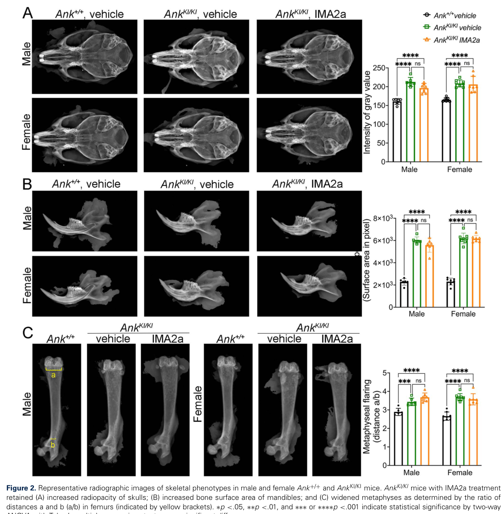

Craniometaphyseal dysplasia (CMD) is a very rare sclerosing bone dysplasia defined by the combination of progressive diffuse hyperostosis of the cranial and facial bones with metaphyseal widening (Erlenmeyer-flask flaring) of the long bones. The craniofacial arm is what makes the disease disabling: bone laid down at the cranial base and vault progressively narrows the cranial foramina, entrapping the cranial nerves passing through them, so patients present with facial palsy, conductive and sensorineural hearing loss, and visual impairment rather than with fracture or bone pain. Two genetic forms are recognised and differ in gene and inheritance: the common autosomal dominant form caused by heterozygous ANKH variants, and a rarer, generally more severe autosomal recessive form caused by biallelic GJA1 (connexin 43) variants. ANKH is a multipass membrane protein that moves intracellular inorganic pyrophosphate (PPi) into the extracellular matrix, where PPi acts as a physiological inhibitor of hydroxyapatite crystal formation. The classical model of AD-CMD, proposed with the original gene discovery, is that CMD-causing variants reduce that export, lowering extracellular PPi and lifting the brake on mineral deposition. Functional work has since confirmed that CMD-mutant ANK does not transport PPi at all and that plasma PPi is reduced in the knock-in mouse, but it has also complicated the story: the hyperostotic bone in that mouse is itself hypomineralized and immature, both osteoblast and osteoclast differentiation are impaired, and restoring plasma PPi pharmacologically does not rescue the skeletal phenotype. This entry therefore curates two explicit competing models rather than a single settled chain (see `mechanistic_hypotheses`). Treatment remains surgical. Decompression of narrowed cranial foramina and of the foramen magnum relieves neurological compromise, and severely overgrown facial bones can be contoured, but bone regrowth is common and no medical therapy that reverses the hyperostosis has been established.
Ask a research question about Craniometaphyseal Dysplasia. OpenScientist will conduct autonomous deep research using the Disorder Mechanisms Knowledge Base and PubMed literature (typically 10-30 minutes).
Do not include personal health information in your question. Questions and results are cached in your browser's local storage.

name: Craniometaphyseal Dysplasia
creation_date: "2026-08-20T00:00:00Z"
category: Mendelian
description: >
Craniometaphyseal dysplasia (CMD) is a very rare sclerosing bone dysplasia
defined by the combination of progressive diffuse hyperostosis of the cranial
and facial bones with metaphyseal widening (Erlenmeyer-flask flaring) of the
long bones. The craniofacial arm is what makes the disease disabling: bone
laid down at the cranial base and vault progressively narrows the cranial
foramina, entrapping the cranial nerves passing through them, so patients
present with facial palsy, conductive and sensorineural hearing loss, and
visual impairment rather than with fracture or bone pain. Two genetic forms
are recognised and differ in gene and inheritance: the common autosomal
dominant form caused by heterozygous ANKH variants, and a rarer, generally
more severe autosomal recessive form caused by biallelic GJA1 (connexin 43)
variants.
ANKH is a multipass membrane protein that moves intracellular inorganic
pyrophosphate (PPi) into the extracellular matrix, where PPi acts as a
physiological inhibitor of hydroxyapatite crystal formation. The classical
model of AD-CMD, proposed with the original gene discovery, is that
CMD-causing variants reduce that export, lowering extracellular PPi and
lifting the brake on mineral deposition. Functional work has since confirmed
that CMD-mutant ANK does not transport PPi at all and that plasma PPi is
reduced in the knock-in mouse, but it has also complicated the story: the
hyperostotic bone in that mouse is itself hypomineralized and immature, both
osteoblast and osteoclast differentiation are impaired, and restoring plasma
PPi pharmacologically does not rescue the skeletal phenotype. This entry
therefore curates two explicit competing models rather than a single settled
chain (see `mechanistic_hypotheses`).
Treatment remains surgical. Decompression of narrowed cranial foramina and of
the foramen magnum relieves neurological compromise, and severely overgrown
facial bones can be contoured, but bone regrowth is common and no medical
therapy that reverses the hyperostosis has been established.
disease_term:
preferred_term: craniometaphyseal dysplasia
term:
id: MONDO:0015465
label: craniometaphyseal dysplasia
parents:
- Sclerosing Bone Dysplasias
notes: >-
Relationship to the `defective_skeletal_mineralization` module. CMD sits at
the opposite end of the same pyrophosphate axis as that module's
mineralization-inhibitor-excess arm, and is deliberately NOT curated as a
conformer of it. That module models the FAILURE of hydroxyapatite deposition
at the mineralization front: in hypophosphatasia, deficient
tissue-nonspecific alkaline phosphatase cannot hydrolyse extracellular
inorganic pyrophosphate, the inhibitor accumulates, and bone is
undermineralized. In CMD the same inhibitor is the pivot but the direction of
the primary lesion is reversed: reduced ANKH-mediated PPi export lowers
extracellular pyrophosphate and removes the inhibition. The shared molecule
makes the two diseases informative to read together, but the module's
conformance target asserts impaired mineralization as the rate-limiting step
reached by substrate deficiency or inhibitor excess, and CMD reaches its
phenotype by neither route. No node in this entry declares `conforms_to`
against that module.
A caveat worth stating, because it is the one thing that could be mistaken
for grounds to conform: the Ank knock-in mouse does show a hypomineralized,
less mature bone matrix, and CMD osteoblasts deposit less mineral in culture.
That is still not the module's claim. The module's terminal output is a
clinically undermineralized skeleton presenting as rickets or osteomalacia;
CMD presents as a high-bone-mass sclerosing dysplasia whose problem is too
much bone in the wrong place. The mineral-quality finding is curated here on
its own node (`Hypomineralized, Immature Bone Matrix`) rather than as
conformance.
`osteoporosis_bone_resorption` was also considered and rejected. That module
models net bone LOSS through a resorption/formation imbalance driven by
RANKL-mediated osteoclastogenesis. CMD does involve reduced osteoclast
differentiation and resorption, but the terminal direction is the opposite —
bone accumulates. Conforming would invert the module's output, so the
osteoclast arm of CMD is curated as a disease-specific node instead.
MONDO scope note. `runoak -i sqlite:obo:mondo descendants -p i MONDO:0015465`
returns four descendants: MONDO:0007397 (craniometaphyseal dysplasia,
autosomal dominant, ANKH), MONDO:0009035 (craniometaphyseal dysplasia,
autosomal recessive, GJA1), MONDO:0009031 (craniodiaphyseal dysplasia), and
MONDO:0021021 (craniodiaphyseal dysplasia, autosomal dominant).
The first two are the genetic forms of this disease and are modeled here as
`has_subtypes`, each bound to its own MONDO term, rather than as separate
Disease entries. The reason is not that MONDO lacks identifiers for them — it
has both — but that they share one clinical definition and one radiographic
phenotype and differ in exactly two respects, causal gene and mode of
inheritance, which the subtype discriminators express directly. The
`subtype:` back-references on the phenotype, genetic, and imaging records
carry the differences that are actually attested.
The last two are NOT craniometaphyseal dysplasia. Craniodiaphyseal dysplasia
is a distinct and considerably more severe sclerosing bone dysplasia in which
hyperostosis involves the DIAphyses of the tubular bones rather than
producing the metaphyseal flaring that defines CMD. It is also a different
gene: MONDO records SOST (`hgnc:13771`) as the causal gene of MONDO:0021021,
the same gene as sclerosteosis, and records no causal gene at all for
MONDO:0009031 — so the nesting under CMD is not gene-based and presumably
reflects phenotypic similarity within the sclerosing dysplasias. That a
different causal gene is involved strengthens rather than weakens the case
that these terms should sit beside CMD rather than beneath it.
Nothing in this entry curates craniodiaphyseal dysplasia content, and the two
are deliberately kept apart: the names differ by one syllable and this is a
live Named Entity Confusion risk for anyone curating from search results.
Where "craniodiaphyseal dysplasia" appears in a quoted `snippet:` here it is
inside a verbatim multi-disorder list from the cited paper, not a claim about
CMD. The nesting of a distinct disease under CMD rather than beside it looks
like a candidate MONDO new-term request or reclassification; it is flagged
here for a curator and deliberately not acted on in this entry. The
`diagnosis:` section records how the two are told apart radiographically.
Evidence-source convention used throughout this entry: items citing
GeneReviews (PMID:20301634) are tagged `evidence_source: OTHER` because
GeneReviews is expert-curated secondary literature that reports no primary
data of its own.
Ontology-binding note, recorded because the failure mode is misleading.
`HP:0012812` (Fullness of paranasal tissue) and `HP:0004493` (Craniofacial
hyperostosis, as an `ImagingFindingTerm`) both initially failed enum
validation as "not in dynamic enum (expanded from ontology)", which reads as a
permanent gap in the committed membership cache. It was not: the underlying
cause was the OLS lookup exceeding the validator's 5-second read timeout —
visible on some runs as an explicit `Label lookup ... Read timed out` line,
and invisible on others. Both terms bound successfully on retry, and both are
curated normally here. The lesson for a future curator is that a
"not in dynamic enum" error on a term you have independently confirmed is
reachable from the enum root should be retried before it is worked around, and
should never be worked around by hand-editing a cache file.
has_subtypes:
- name: AD-CMD
display_name: Autosomal dominant craniometaphyseal dysplasia (ANKH)
description: >
The common form, caused by heterozygous variants in ANKH that cluster
within a small stretch of the protein. Progressive craniofacial hyperostosis
with cranial nerve entrapment and metaphyseal widening; life expectancy is
normal in uncomplicated disease but can be reduced when the foramen magnum
is compromised. Approximately 30% of cases arise from a de novo variant.
subtype_term:
preferred_term: craniometaphyseal dysplasia, autosomal dominant
term:
id: MONDO:0007397
label: craniometaphyseal dysplasia, autosomal dominant
genes:
- preferred_term: ANKH
term:
id: hgnc:15492
label: ANKH
inheritance:
- name: Autosomal Dominant
description: >
Inherited in an autosomal dominant manner; most affected individuals have
an affected parent, and roughly 30% of cases arise from a de novo ANKH
variant.
inheritance_term:
preferred_term: Autosomal dominant inheritance
term:
id: HP:0000006
label: Autosomal dominant inheritance
evidence:
- reference: PMID:20301634
reference_title: Autosomal Dominant Craniometaphyseal Dysplasia.
supports: SUPPORT
evidence_source: OTHER
snippet: "The proportion of individuals with AD-CMD caused by a de novo pathogenic variant is approximately 30%."
explanation: >-
GeneReviews states the de novo proportion for the dominant form.
Evidence source is OTHER because GeneReviews is an expert-curated review
rather than a primary study.
- name: AR-CMD
display_name: Autosomal recessive craniometaphyseal dysplasia (GJA1)
description: >
A rarer form caused by biallelic variants in GJA1, encoding the gap junction
protein connexin 43, and reported as more severely sclerosing than the
dominant form. GJA1 is the same gene mutated in oculodentodigital dysplasia,
but the recessive CMD allele (p.Arg239Gln) does not produce the ocular,
dental, or syndactyly features of that disorder.
subtype_term:
preferred_term: craniometaphyseal dysplasia, autosomal recessive
term:
id: MONDO:0009035
label: craniometaphyseal dysplasia, autosomal recessive
genes:
- preferred_term: GJA1
term:
id: hgnc:4274
label: GJA1
inheritance:
- name: Autosomal Recessive
description: >
Inherited in an autosomal recessive manner; the reported GJA1 p.Arg239Gln
variant cosegregated in the homozygous state with affected family members
across four families.
inheritance_term:
preferred_term: Autosomal recessive inheritance
term:
id: HP:0000007
label: Autosomal recessive inheritance
evidence:
- reference: PMID:23951358
reference_title: A novel autosomal recessive GJA1 missense mutation linked to Craniometaphyseal dysplasia.
supports: SUPPORT
evidence_source: HUMAN_CLINICAL
snippet: "We confirmed this mutation in 6 individuals from 3 additional families. The homozygous mutation cosegregated only with affected family members."
explanation: >-
Establishes recessive inheritance by homozygous cosegregation across
multiple families.
classifications:
isds_skeletal_category:
- classification_value: osteosclerotic_disorders
notes: >-
ISDS Nosology and Classification of Genetic Skeletal Disorders, 2023
revision (Unger et al., PMID:36779427), group 25 "Osteosclerotic
disorders", whose scope statement explicitly names craniometaphyseal and
craniodiaphyseal dysplasia. This group was formed in the 2023 revision by
fusing the former "Neonatal osteosclerotic dysplasias" and "Other
sclerosing bone disorders" groups; osteoclast-failure osteopetrosis
remains in the separate group 24. Assignment made from the group scope
rather than from a quoted per-disease table row.
prevalence:
- population: Worldwide
measure_type: UNKNOWN
prevalence_class: NOT_YET_DOCUMENTED
notes: >-
Deliberately recorded as not yet documented rather than estimated. CMD is
uniformly described as "very rare", but a literature search conducted for
this entry found no population-based estimate of incidence, point
prevalence, or carrier frequency for either subtype, and the literature is
dominated by single-case and small-family reports. A count of publications
is not a count of cases, and a general rare-disease band would be an
inference rather than a measurement, so no `rate_per_100000` is asserted.
This record exists to state that the question was asked, not to supply a
number. No evidence block is attached because the claim is an absence of
published data, which no single abstract states.
mechanistic_hypotheses:
- hypothesis_group_id: ppi_depletion_model
hypothesis_label: Extracellular pyrophosphate depletion relieves inhibition of mineralization
status: CANONICAL
applies_to_subtypes:
- AD-CMD
description: >-
The model proposed with the original gene discovery and still the textbook
account of AD-CMD. ANKH normally exports intracellular inorganic
pyrophosphate into the bone extracellular matrix, where PPi inhibits
hydroxyapatite crystal formation. CMD-causing variants reduce that export,
so extracellular PPi falls, the constitutive brake on mineral deposition is
released, and bone is mineralized and accumulated in excess. Two independent
strands support it: CMD-mutant ANK has no measurable PPi transport activity
in a direct transport assay, and plasma PPi is significantly reduced in the
knock-in mouse.
evidence:
- reference: PMID:11326338
reference_title: Autosomal dominant craniometaphyseal dysplasia is caused by mutations in the transmembrane protein ANK.
supports: SUPPORT
evidence_source: HUMAN_CLINICAL
snippet: "These results suggest that the mutated protein has a dominant negative effect on the function of ANK, since reduced levels of pyrophosphate in bone matrix are known to increase mineralization."
explanation: >-
The original statement of this model, linking reduced bone-matrix
pyrophosphate to increased mineralization.
- reference: PMID:17186460
reference_title: Biochemical and genetic analysis of ANK in arthritis and bone disease.
supports: SUPPORT
evidence_source: IN_VITRO
snippet: "Craniometaphyseal dysplasia mutations do not transport pyrophosphate and cannot rescue the defects of Ank null mice."
explanation: >-
Direct radiolabeled transport assay confirming the transport lesion this
model depends on.
notes: >-
Note that the transport data refine the original proposal as much as they
confirm it. Reichenberger et al. inferred a dominant-negative effect, but
CMD-mutant ANK turns out to have no transport activity at all and does not
interfere with wild-type ANK when co-expressed, which points to loss of
function with haploinsufficiency and mislocalization rather than to
classical dominant negativity.
A second refinement this model has NOT absorbed: the substrate itself is
disputed. More recent work from the same group describes ANK/ANKH as a
transporter of citrate and ATP, with extracellular PPi arising downstream
from exported ATP via ENPP1. That does not reverse the model's direction —
less ANKH activity still means less extracellular pyrophosphate — but it
moves the lesion one step upstream and means the model should not be stated
as "ANKH fails to export PPi" without qualification. Curators should also
not classify every ANKH variant as a simple null allele; a dominant
function of the mutant protein has been proposed and is not excluded.
- hypothesis_group_id: impaired_bone_cell_differentiation_model
hypothesis_label: Impaired osteoclast and osteoblast differentiation drives high bone mass
status: ALTERNATIVE
description: >-
A competing (or superimposed) model in which the high bone mass of CMD comes
principally from a cell-differentiation defect rather than from unopposed
mineral deposition. In the Ank knock-in mouse and in cells from CMD
patients, both osteoblastogenesis and osteoclastogenesis are impaired;
osteoclasts are fewer, form defective actin rings, and resorb less bone, and
bone marrow transplantation partially rescues the increased bone mass. The
model additionally accounts for three observations the pyrophosphate model
does not: the hyperostotic bone is itself hypomineralized and less mature,
compensatory ENPP1 activity can leave extracellular PPi comparable to
wild-type in mutant osteoblasts, and pharmacological restoration of plasma
PPi fails to rescue the skeletal phenotype.
evidence:
- reference: PMID:21149338
reference_title: A Phe377del mutation in ANK leads to impaired osteoblastogenesis and osteoclastogenesis in a mouse model for craniometaphyseal dysplasia (CMD).
supports: SUPPORT
evidence_source: MODEL_ORGANISM
snippet: "Increased bone mass could partially be rescued by bone marrow transplants supporting our hypothesis that reduced osteoclastogenesis contributes at least in part to hyperostosis."
explanation: >-
An interventional rescue tying the high bone mass causally to the
osteoclast compartment rather than to mineral chemistry.
- reference: PMID:39165910
reference_title: ENPP1 enzyme replacement therapy improves ectopic calcification but does not rescue skeletal phenotype in a mouse model for craniometaphyseal dysplasia.
supports: SUPPORT
evidence_source: MODEL_ORGANISM
snippet: "Our data demonstrate that IMA2a is sufficient to restore plasma PPi levels and reduce ectopic calcification but fails to rescue skeletal abnormalities in AnkKI/KI mice under our treatment conditions."
explanation: >-
A direct test of the pyrophosphate model: correcting the PPi deficit does
not correct the skeleton, which is the strongest argument that PPi
depletion is not sufficient to explain the hyperostosis.
images:
- Craniometaphyseal_Dysplasia-deep-research-falcon_artifacts/image-1.png
pathophysiology:
- name: Reduced ANKH-Mediated Pyrophosphate Export
description: >
ANKH encodes a multipass transmembrane protein classically described as
moving inorganic pyrophosphate (PPi) from the cytosol into the
extracellular matrix. That substrate assignment has been revised: more
recent work describes ANK/ANKH as a transporter of small molecules
including citrate and ATP, with extracellular PPi generated downstream from
exported ATP by ENPP1 rather than exported as PPi in appreciable amounts.
The node is retained because the *direction* of the lesion is unchanged
under either reading — less ANKH activity means less extracellular
pyrophosphate — but curators should not treat "ANKH is the PPi transporter"
as settled. AD-CMD-causing variants cluster within a few amino acids of one
cytosolic domain and abolish measurable PPi transport in the oocyte assay.
The mutant protein is also
short-lived and mislocalized: steady-state ANK/ANKH levels fall through
rapid proteasomal and lysosomal degradation, and what protein remains is
found in the cytoplasm rather than at the plasma membrane. Notably,
co-expression experiments show mutant ANK does not impair wild-type ANK,
arguing against the classical dominant-negative reading of the original
report.
role: trigger
biological_scale: MOLECULAR
biological_processes:
- preferred_term: Inorganic pyrophosphate export to the extracellular matrix
term:
id: GO:0030505
label: inorganic diphosphate transport
modifier: DECREASED
evidence:
- reference: PMID:11326338
reference_title: Autosomal dominant craniometaphyseal dysplasia is caused by mutations in the transmembrane protein ANK.
supports: SUPPORT
evidence_source: HUMAN_CLINICAL
snippet: "we describe herein three different mutations, in five different families and in isolated cases, in ANK, a multipass transmembrane protein involved in the transport of intracellular pyrophosphate into extracellular matrix"
explanation: >-
Identifies ANK as the CMD gene and states the transport function this node
describes.
- reference: PMID:11326338
reference_title: Autosomal dominant craniometaphyseal dysplasia is caused by mutations in the transmembrane protein ANK.
supports: SUPPORT
evidence_source: HUMAN_CLINICAL
snippet: "All mutations cluster within seven amino acids in one of the six possible cytosolic domains of ANK."
explanation: Documents the tight mutational clustering characteristic of CMD alleles.
- reference: PMID:17186460
reference_title: Biochemical and genetic analysis of ANK in arthritis and bone disease.
supports: SUPPORT
evidence_source: IN_VITRO
snippet: "Wild-type ANK stimulates saturable transport of pyrophosphate ions across the plasma membrane, with half maximal rates attained at physiological levels of pyrophosphate."
explanation: >-
Establishes the normal transport activity against which the CMD lesion is
defined, measured directly in frog oocytes.
- reference: PMID:30356088
reference_title: Rapid degradation of progressive ankylosis protein (ANKH) in craniometaphyseal dysplasia.
supports: SUPPORT
evidence_source: IN_VITRO
snippet: "Mutations causing CMD led to decreased steady-state levels of ANK/ANKH protein due to rapid degradation."
explanation: Adds the protein-stability lesion that compounds the transport defect.
- reference: PMID:30356088
reference_title: Rapid degradation of progressive ankylosis protein (ANKH) in craniometaphyseal dysplasia.
supports: SUPPORT
evidence_source: IN_VITRO
snippet: "Co-expressing wt and CMD-mutant ANK in cells showed that CMD-mutant ANK does not negatively affect wt ANK expression and localization, and vice versa."
explanation: >-
Evidence against a classical dominant-negative mechanism, supporting the
loss-of-function reading recorded in this node's description.
- reference: PMID:39165910
reference_title: ENPP1 enzyme replacement therapy improves ectopic calcification but does not rescue skeletal phenotype in a mouse model for craniometaphyseal dysplasia.
supports: PARTIAL
evidence_source: OTHER
snippet: "Mutations in ANKH (mouse ortholog ANK), a transporter of small molecules such as citrate and ATP, are responsible for autosomal dominant CMD."
explanation: >-
Qualifies the node's substrate assignment: a 2024 paper from the group
that built the CMD mouse describes ANKH as a citrate and ATP transporter
rather than a pyrophosphate transporter. Recorded as PARTIAL because it
supports ANKH as the AD-CMD gene while contradicting the classical
substrate claim. Evidence source is OTHER because the sentence is the
paper's background framing, not a result it reports.
downstream:
- target: Extracellular Pyrophosphate Depletion
causal_link_type: DIRECT
hypothesis_groups:
- ppi_depletion_model
description: >
Loss of transport activity lowers the concentration of pyrophosphate in
the extracellular compartment of bone and in plasma.
- target: Impaired Osteoclast Differentiation and Bone Resorption
causal_link_type: DIRECT
hypothesis_groups:
- impaired_bone_cell_differentiation_model
description: >
The ANKH lesion acts cell-autonomously on the osteoclast lineage,
independently of its effect on extracellular mineral chemistry.
evidence:
- reference: PMID:29056330
reference_title: Craniometaphyseal Dysplasia Mutations in ANKH Negatively Affect Human Induced Pluripotent Stem Cell Differentiation into Osteoclasts.
supports: SUPPORT
evidence_source: IN_VITRO
snippet: "Isogenic hiPSCs with ANKH mutations formed fewer osteoclasts, resorbed less bone, expressed lower levels of osteoclast marker genes, and showed decreased protein levels of ANKH and vacuolar proton pump v-ATP6v0d2."
explanation: >-
Isogenic human iPSC lines differing only in the ANKH variant isolate the
mutation as the cause of the osteoclast defect.
- target: Impaired Osteoblast Differentiation and Matrix Mineralization
causal_link_type: DIRECT
hypothesis_groups:
- impaired_bone_cell_differentiation_model
description: >
The same lesion reduces osteoblast mineral deposition and expression of
mineralization-regulating genes.
- name: Connexin 43 Gap Junction Dysfunction
description: >
The autosomal recessive arm. GJA1 encodes connexin 43, the predominant gap
junction protein of osteoblasts, osteocytes, osteoclasts, and chondrocytes,
through which small molecules and ions are exchanged between adjacent bone
cells. The recessive CMD allele p.Arg239Gln lies in the connexin 43
C-terminus and produces altered spatial expression of the protein with mild
reduction of gap junction and hemichannel activity. Importantly, the
knock-in mouse phenotype is not reproduced by Cx43 ablation models, so simple
loss of connexin 43 function is unlikely to be the whole mechanism and the
downstream bone-remodeling defect remains to be worked out.
role: trigger
biological_scale: MOLECULAR
cell_types:
- preferred_term: Osteocyte
term:
id: CL:0000137
label: osteocyte
- preferred_term: Osteoblast
term:
id: CL:0000062
label: osteoblast
- preferred_term: Osteoclast
term:
id: CL:0000092
label: osteoclast
- preferred_term: Chondrocyte
term:
id: CL:0000138
label: chondrocyte
molecular_functions:
- preferred_term: Gap junction channel activity
term:
id: GO:0005243
label: gap junction channel activity
modifier: DECREASED
- preferred_term: Gap junction hemichannel activity
term:
id: GO:0055077
label: gap junction hemi-channel activity
modifier: DECREASED
evidence:
- reference: PMID:23951358
reference_title: A novel autosomal recessive GJA1 missense mutation linked to Craniometaphyseal dysplasia.
supports: SUPPORT
evidence_source: HUMAN_CLINICAL
snippet: "In this study, we performed whole-exome sequencing for one subject with AR CMD and identified a novel missense mutation (c.716G>A, p.Arg239Gln) in the C-terminus of the gap junction protein alpha-1 (GJA1) coding for connexin 43 (Cx43)."
explanation: The gene-discovery report identifying GJA1 as the AR-CMD gene.
- reference: PMID:23951358
reference_title: A novel autosomal recessive GJA1 missense mutation linked to Craniometaphyseal dysplasia.
supports: SUPPORT
evidence_source: HUMAN_CLINICAL
snippet: "Connexin 43 is a major component of gap junctions in osteoblasts, osteocytes, osteoclasts and chondrocytes."
explanation: Establishes the bone-cell expression that makes this a skeletal disease gene.
- reference: PMID:39848944
reference_title: Skeletal abnormalities caused by a Connexin43(R239Q) mutation in a mouse model for autosomal recessive craniometaphyseal dysplasia.
supports: SUPPORT
evidence_source: MODEL_ORGANISM
snippet: "Moreover, the Cx43R239Q mutation results in altered spatial expression of Cx43 protein and mild reduction of gap junction and hemichannel activity."
explanation: Characterizes the molecular consequence of the recessive allele.
- reference: PMID:39848944
reference_title: Skeletal abnormalities caused by a Connexin43(R239Q) mutation in a mouse model for autosomal recessive craniometaphyseal dysplasia.
supports: PARTIAL
evidence_source: MODEL_ORGANISM
snippet: "The distinct phenotype seen in Cx43KI/KI mice but not in Cx43 ablation models suggests that Cx43 loss-of-function is unlikely the main cause of AR CMD."
explanation: >-
Qualifies the node: the phenotype is not explained by simple loss of
connexin 43 function, so the mechanism of this arm is incompletely
resolved. Recorded as PARTIAL because it constrains rather than confirms
the mechanism.
downstream:
- target: Impaired Osteoclast Differentiation and Bone Resorption
causal_link_type: INDIRECT_UNKNOWN_INTERMEDIATES
description: >
Actively resorbing osteoclasts carrying the mutation show reduced
resorption, converging on the same effector compartment as the ANKH arm,
though the intervening steps are not established.
evidence:
- reference: PMID:39848944
reference_title: Skeletal abnormalities caused by a Connexin43(R239Q) mutation in a mouse model for autosomal recessive craniometaphyseal dysplasia.
supports: SUPPORT
evidence_source: MODEL_ORGANISM
snippet: "Although formation of resting OCs in Cx43+/+ and Cx43KI/KI mice is comparable, the actively resorbing Cx43KI/KI OCs have reduced resorption on bone chips."
explanation: >-
Locates the recessive-arm defect in osteoclast resorptive function
rather than in osteoclast formation.
- name: Extracellular Pyrophosphate Depletion
description: >
Extracellular inorganic pyrophosphate is a physiological inhibitor of
hydroxyapatite crystal nucleation and growth, and also of bone resorption.
When ANKH export fails, the local and circulating PPi concentration falls
and the constitutive brake on mineral deposition is released. The size of
this effect within bone is contested: plasma PPi is significantly reduced in
the knock-in mouse, but compensatory upregulation of ENPP1, which generates
PPi from ATP, can leave extracellular PPi around mutant osteoblasts
comparable to wild type.
role: central_effector
biological_scale: MOLECULAR
biological_processes:
- preferred_term: Pyrophosphate-mediated negative regulation of bone mineralization
term:
id: GO:0030502
label: negative regulation of bone mineralization
modifier: DECREASED
locations:
- preferred_term: Bone
term:
id: UBERON:0001474
label: bone element
evidence:
- reference: PMID:11326272
reference_title: Heterozygous mutations in ANKH, the human ortholog of the mouse progressive ankylosis gene, result in craniometaphyseal dysplasia.
supports: SUPPORT
evidence_source: HUMAN_CLINICAL
snippet: "The ANK protein spans the outer cell membrane and shuttles inorganic pyrophosphate (PPi), a major inhibitor of physiologic and pathologic calcification, bone mineralization and bone resorption."
explanation: >-
States the inhibitory role of extracellular pyrophosphate that this node
depends on.
- reference: PMID:39165910
reference_title: ENPP1 enzyme replacement therapy improves ectopic calcification but does not rescue skeletal phenotype in a mouse model for craniometaphyseal dysplasia.
supports: SUPPORT
evidence_source: MODEL_ORGANISM
snippet: "Pyrophosphate (PPi) levels in plasma are significantly reduced in AnkKI/KI mice. PPi is a potent inhibitor of mineralization."
explanation: >-
Measures the circulating pyrophosphate deficit directly in the CMD mouse
model.
- reference: PMID:21149338
reference_title: A Phe377del mutation in ANK leads to impaired osteoblastogenesis and osteoclastogenesis in a mouse model for craniometaphyseal dysplasia (CMD).
supports: PARTIAL
evidence_source: MODEL_ORGANISM
snippet: "Significantly increased ENPP1 activity may compensate for dysfunctional mutant ANK leading to comparable extracellular PPi levels in Ank(+/+) osteoblasts."
explanation: >-
Qualifies the node: a compensatory pathway can normalize extracellular
pyrophosphate in bone despite the transport lesion, which is why this is
recorded as PARTIAL rather than SUPPORT.
downstream:
- target: High Craniofacial Bone Mass
causal_link_type: DIRECT
hypothesis_groups:
- ppi_depletion_model
description: >
Loss of the pyrophosphate brake permits hydroxyapatite deposition to
proceed unopposed, so bone accumulates.
- name: Impaired Osteoclast Differentiation and Bone Resorption
description: >
Osteoclast formation and function are reduced in CMD. Bone marrow-derived
macrophage cultures from the knock-in mouse and peripheral blood cultures
from CMD patients both show decreased osteoclastogenesis; the osteoclasts
that do form have disrupted actin rings, impaired fusion, and reduced
resorptive activity. Because bone mass is set by the balance of formation
and resorption, a resorption deficit alone will raise bone mass, and bone
marrow transplantation partially corrects the phenotype in the mouse.
role: effector
biological_scale: CELLULAR
cell_types:
- preferred_term: Osteoclast
term:
id: CL:0000092
label: osteoclast
biological_processes:
- preferred_term: Bone resorption
term:
id: GO:0045453
label: bone resorption
modifier: DECREASED
evidence:
- reference: PMID:21149338
reference_title: A Phe377del mutation in ANK leads to impaired osteoblastogenesis and osteoclastogenesis in a mouse model for craniometaphyseal dysplasia (CMD).
supports: SUPPORT
evidence_source: IN_VITRO
snippet: "Similar to Ank(KI/KI) bone marrow-derived macrophage cultures, peripheral blood cultures from CMD patients exhibited reduced osteoclastogenesis."
explanation: >-
Confirms the osteoclast defect in cells taken from human patients, not
only in the mouse model. Evidence source is IN_VITRO rather than
HUMAN_CLINICAL because the measurement is made in cultured cells; their
human origin is what makes the result translationally important, but it
is still a culture experiment.
- reference: PMID:19257826
reference_title: Introduction of a Phe377del mutation in ANK creates a mouse model for craniometaphyseal dysplasia.
supports: SUPPORT
evidence_source: MODEL_ORGANISM
snippet: "Interestingly, Ank(KI/KI) bone marrow-derived macrophage cultures show decreased osteoclastogenesis."
explanation: The original observation of reduced osteoclastogenesis in the CMD mouse.
downstream:
- target: High Craniofacial Bone Mass
causal_link_type: DIRECT
hypothesis_groups:
- impaired_bone_cell_differentiation_model
description: >
Reduced osteoclastic resorption shifts the remodeling balance toward net
bone accumulation.
evidence:
- reference: PMID:21149338
reference_title: A Phe377del mutation in ANK leads to impaired osteoblastogenesis and osteoclastogenesis in a mouse model for craniometaphyseal dysplasia (CMD).
supports: SUPPORT
evidence_source: MODEL_ORGANISM
snippet: "Increased bone mass could partially be rescued by bone marrow transplants supporting our hypothesis that reduced osteoclastogenesis contributes at least in part to hyperostosis."
explanation: >-
Rescue by transplanting a wild-type haematopoietic compartment
establishes this edge causally.
- target: Metaphyseal Modeling Defect
causal_link_type: DIRECT
description: >
Narrowing ("funnelization") of the metaphysis during growth requires
osteoclastic resorption of the periosteal surface; when resorption is
deficient the metaphysis fails to taper.
- name: Impaired Osteoblast Differentiation and Matrix Mineralization
description: >
Osteoblasts carrying the CMD mutation deposit less mineral in culture and
express reduced levels of mineralization-regulating genes. They also fail to
support osteoclastogenesis adequately, so the osteoblast defect feeds the
osteoclast defect. This node is the reason CMD cannot be read as a simple
"too much mineralization" disease.
role: effector
biological_scale: CELLULAR
cell_types:
- preferred_term: Osteoblast
term:
id: CL:0000062
label: osteoblast
biological_processes:
- preferred_term: Osteoblast differentiation
term:
id: GO:0001649
label: osteoblast differentiation
modifier: DECREASED
evidence:
- reference: PMID:21149338
reference_title: A Phe377del mutation in ANK leads to impaired osteoblastogenesis and osteoclastogenesis in a mouse model for craniometaphyseal dysplasia (CMD).
supports: SUPPORT
evidence_source: MODEL_ORGANISM
snippet: "Ank(KI/KI) osteoblast cultures showed decreased mineral deposition."
explanation: Direct measurement of reduced osteoblast mineral deposition.
- reference: PMID:21149338
reference_title: A Phe377del mutation in ANK leads to impaired osteoblastogenesis and osteoclastogenesis in a mouse model for craniometaphyseal dysplasia (CMD).
supports: SUPPORT
evidence_source: MODEL_ORGANISM
snippet: "We conclude that the Phe377del mutation in ANK causes impaired osteoblastogenesis and osteoclastogenesis resulting in hypomineralization and a high bone mass phenotype."
explanation: >-
States the paired osteoblast/osteoclast defect and the resulting
combination of hypomineralization with high bone mass.
downstream:
- target: Hypomineralized, Immature Bone Matrix
causal_link_type: DIRECT
description: >
Reduced osteoblast mineral deposition yields bone matrix that is less
mineralized and less mature than normal, even where its total volume is
increased.
- name: High Craniofacial Bone Mass
description: >
Bone accumulates rather than being remodeled to a steady mass. This is the
hinge of the entry: the two competing upstream models converge here, and
everything clinically important follows from bone being laid down where it
should not be. The accumulation is most consequential in the craniofacial
skeleton, where it presents as progressive diffuse hyperostosis and
sclerosis of the cranial base, cranial vault, facial bones, and mandible,
progressing throughout life.
role: central_effector
biological_scale: TISSUE
biological_processes:
- preferred_term: Ossification
term:
id: GO:0001503
label: ossification
modifier: INCREASED
locations:
- preferred_term: Skull
term:
id: UBERON:0003129
label: skull
evidence:
- reference: PMID:20301634
reference_title: Autosomal Dominant Craniometaphyseal Dysplasia.
supports: SUPPORT
evidence_source: OTHER
snippet: "Diagnosis is based on clinical and radiographic findings that include diffuse hyperostosis of the cranial base, cranial vault, facial bones, and mandible as well as widening and radiolucency of metaphyses in long bones."
explanation: >-
Defines the anatomical distribution of the bone accumulation. Evidence
source is OTHER because GeneReviews is an expert-curated review.
- reference: PMID:11326272
reference_title: Heterozygous mutations in ANKH, the human ortholog of the mouse progressive ankylosis gene, result in craniometaphyseal dysplasia.
supports: SUPPORT
evidence_source: HUMAN_CLINICAL
snippet: "Craniometaphyseal dysplasia (CMD) is a bone dysplasia characterized by overgrowth and sclerosis of the craniofacial bones and abnormal modeling of the metaphyses of the tubular bones."
explanation: >-
States the defining combination of craniofacial overgrowth and metaphyseal
modeling failure.
downstream:
- target: Cranial Foraminal Narrowing and Cranial Nerve Compression
causal_link_type: DIRECT
description: >
Bone encroaching on the skull-base foramina reduces their calibre and
entraps the cranial nerves that traverse them.
evidence:
- reference: PMID:20301634
reference_title: Autosomal Dominant Craniometaphyseal Dysplasia.
supports: SUPPORT
evidence_source: OTHER
snippet: "Progressive thickening of craniofacial bones continues throughout life, often resulting in narrowing of the cranial foramina, including the foramen magnum."
explanation: >-
States the hyperostosis-to-foraminal-narrowing step directly. Evidence
source is OTHER because GeneReviews is an expert-curated review.
- name: Hypomineralized, Immature Bone Matrix
description: >
A counter-intuitive but well-documented feature: despite the hyperostotic,
high-mass phenotype, the bone matrix itself is hypomineralized and less
mature than normal, so its biomechanical properties may be compromised. This
node is curated separately because it is precisely the observation that a
naive "excess mineralization" reading of CMD would miss, and because it is
what distinguishes CMD from a disease of pure mineral excess.
role: consequence
biological_scale: TISSUE
biological_processes:
- preferred_term: Bone mineralization
term:
id: GO:0030282
label: bone mineralization
modifier: DECREASED
locations:
- preferred_term: Bone
term:
id: UBERON:0001474
label: bone element
evidence:
- reference: PMID:19257826
reference_title: Introduction of a Phe377del mutation in ANK creates a mouse model for craniometaphyseal dysplasia.
supports: SUPPORT
evidence_source: MODEL_ORGANISM
snippet: "Despite the hyperostotic phenotype, bone matrix in Ank(KI/KI) mice is hypomineralized and less mature, indicating that biomechanical properties of bones may be compromised by the Ank mutation."
explanation: >-
The direct statement of the dissociation between bone mass and bone
mineral quality in the CMD model.
- name: Cranial Foraminal Narrowing and Cranial Nerve Compression
description: >
Progressive hyperostosis narrows the cranial foramina, including the
internal auditory canals and the foramen magnum. The cranial nerves passing
through them are compressed, which is the proximate cause of the facial
palsy, hearing loss, and visual impairment that dominate the clinical
picture and the reason treatment is decompressive. Foramen magnum
compromise, with cervicomedullary compression, is the mechanism by which
severe disease shortens life.
role: consequence
biological_scale: ORGANISM
locations:
- preferred_term: Skull
term:
id: UBERON:0003129
label: skull
evidence:
- reference: PMID:20301634
reference_title: Autosomal Dominant Craniometaphyseal Dysplasia.
supports: SUPPORT
evidence_source: OTHER
snippet: "If untreated, compression of cranial nerves can lead to disabling conditions such as facial palsy, blindness, or deafness (conductive and/or sensorineural)."
explanation: >-
Names the neurological consequences of foraminal compression. Evidence
source is OTHER because GeneReviews is an expert-curated review.
- reference: PMID:27594963
reference_title: "Craniometaphyseal dysplasia in a 14-month old: a case report and review of imaging differential diagnosis."
supports: SUPPORT
evidence_source: HUMAN_CLINICAL
snippet: "Cranial computed tomography scan showed diffuse calvarial and skull base hyperostosis with excessive bone narrowing the internal auditory canals and skull base foramina."
explanation: >-
Direct radiological demonstration in a patient that hyperostotic bone is
what narrows the foramina.
- reference: PMID:20301634
reference_title: Autosomal Dominant Craniometaphyseal Dysplasia.
supports: SUPPORT
evidence_source: OTHER
snippet: "In individuals with typical uncomplicated AD-CMD life expectancy is normal; in those with severe AD-CMD life expectancy can be reduced as a result of compression of the foramen magnum."
explanation: >-
Establishes foramen magnum compression as the route to reduced life
expectancy. Evidence source is OTHER because GeneReviews is an
expert-curated review.
- name: Metaphyseal Modeling Defect
description: >
Failure of normal metaphyseal modeling in the growing long bones, so the
metaphysis stays broad instead of tapering toward the diaphysis. The
radiographic result is club-shaped widening with cortical thinning and loss
of the normal concave di-metaphyseal curve, classically described as
Erlenmeyer-flask deformity of the distal femora. Unlike the craniofacial arm
this is largely a radiographic diagnostic feature and is not usually itself
disabling.
role: consequence
biological_scale: TISSUE
locations:
- preferred_term: Metaphysis
term:
id: UBERON:0001438
label: metaphysis
evidence:
- reference: PMID:19444897
reference_title: The Erlenmeyer flask bone deformity in the skeletal dysplasias.
supports: SUPPORT
evidence_source: HUMAN_CLINICAL
snippet: "The deformity consists of lack of modeling of the di-metaphysis with abnormal cortical thinning and lack of the concave di-metaphyseal curve resulting in an Erlenmeyer flask-like appearance."
explanation: >-
Defines the modeling failure this node describes, from the registry-based
study of the deformity across skeletal dysplasias.
- reference: PMID:19444897
reference_title: The Erlenmeyer flask bone deformity in the skeletal dysplasias.
supports: SUPPORT
evidence_source: HUMAN_CLINICAL
snippet: "EFD-T was identified in: frontometaphyseal dysplasia, craniometaphyseal dysplasia, craniodiaphyseal dysplasia, diaphyseal dysplasia-Engelmann type, metaphyseal dysplasia-Pyle type, Melnick-Needles osteodysplasty, and otopalatodigital syndrome type I."
explanation: >-
Places craniometaphyseal dysplasia specifically in the typical
(non-marrow-expansion, normal-trabecular) Erlenmeyer flask category.
phenotypes:
- name: Craniofacial Hyperostosis
description: >
Progressive diffuse thickening and sclerosis of the cranial base, cranial
vault, facial bones, and mandible, continuing throughout life. The defining
feature of the disease. Clinically it produces a characteristic facies of
wide nasal bridge, fullness of the paranasal tissue, hypertelorism with
increased bizygomatic width, and a prominent mandible.
phenotype_term:
preferred_term: Craniofacial hyperostosis
term:
id: HP:0004493
label: Craniofacial hyperostosis
clinical_course: PROGRESSIVE
evidence:
- reference: PMID:20301634
reference_title: Autosomal Dominant Craniometaphyseal Dysplasia.
supports: SUPPORT
evidence_source: OTHER
snippet: "Progressive thickening of craniofacial bones continues throughout life, often resulting in narrowing of the cranial foramina, including the foramen magnum."
explanation: >-
Documents the progressive craniofacial thickening. Evidence source is
OTHER because GeneReviews is an expert-curated review.
- reference: PMID:20301634
reference_title: Autosomal Dominant Craniometaphyseal Dysplasia.
supports: SUPPORT
evidence_source: OTHER
snippet: "Autosomal dominant craniometaphyseal dysplasia (AD-CMD) is characterized by progressive diffuse hyperostosis of cranial bones evident clinically as wide nasal bridge, fullness of the paranasal tissue, hypertelorism with an increase in bizygomatic width, and prominent mandible."
explanation: >-
Supports the characteristic facies described here, including the paranasal
fullness that could not be bound to its own HPO term (see entry notes).
Evidence source is OTHER because GeneReviews is an expert-curated review.
- name: Increased Bone Mineral Density
description: >
Generalized increase in bone density, the radiographic hallmark that places
CMD among the sclerosing bone dysplasias.
phenotype_term:
preferred_term: Increased bone mineral density
term:
id: HP:0011001
label: Increased bone mineral density
evidence:
- reference: PMID:11326338
reference_title: Autosomal dominant craniometaphyseal dysplasia is caused by mutations in the transmembrane protein ANK.
supports: SUPPORT
evidence_source: HUMAN_CLINICAL
snippet: "Craniometaphyseal dysplasia (CMD) is a rare skeletal disorder characterized by progressive thickening and increased mineral density of craniofacial bones and abnormally developed metaphyses in long bones."
explanation: >-
States the increased mineral density that defines the disorder
radiographically.
- name: Wide Nasal Bridge
description: >
A characteristic facial feature of the dominant form, produced by
hyperostosis of the nasal and paranasal bones.
phenotype_term:
preferred_term: Wide nasal bridge
term:
id: HP:0000431
label: Wide nasal bridge
evidence:
- reference: PMID:20301634
reference_title: Autosomal Dominant Craniometaphyseal Dysplasia.
supports: SUPPORT
evidence_source: OTHER
snippet: "Autosomal dominant craniometaphyseal dysplasia (AD-CMD) is characterized by progressive diffuse hyperostosis of cranial bones evident clinically as wide nasal bridge, fullness of the paranasal tissue, hypertelorism with an increase in bizygomatic width, and prominent mandible."
explanation: >-
GeneReviews lists this among the defining clinical features of CMD. The
chapter covers the dominant form only, so this is an AD-attested rather
than an AD-specific feature; the phenotype is deliberately left unscoped
because nothing reports it as absent in AR-CMD.
- name: Fullness of Paranasal Tissue
description: >
Soft-tissue fullness over the paranasal region reflecting the underlying
bony overgrowth, part of the characteristic CMD facies.
phenotype_term:
preferred_term: Fullness of paranasal tissue
term:
id: HP:0012812
label: Fullness of paranasal tissue
evidence:
- reference: PMID:20301634
reference_title: Autosomal Dominant Craniometaphyseal Dysplasia.
supports: SUPPORT
evidence_source: OTHER
snippet: "Autosomal dominant craniometaphyseal dysplasia (AD-CMD) is characterized by progressive diffuse hyperostosis of cranial bones evident clinically as wide nasal bridge, fullness of the paranasal tissue, hypertelorism with an increase in bizygomatic width, and prominent mandible."
explanation: >-
GeneReviews names paranasal fullness among the characteristic clinical
features. Left unscoped for the same reason as the other facial features:
the chapter covers the dominant form only, which makes this AD-attested
rather than AD-specific.
- name: Hypertelorism
description: >
Increased interocular distance accompanied by an increase in bizygomatic
width, reflecting facial bone overgrowth.
phenotype_term:
preferred_term: Hypertelorism
term:
id: HP:0000316
label: Hypertelorism
evidence:
- reference: PMID:20301634
reference_title: Autosomal Dominant Craniometaphyseal Dysplasia.
supports: SUPPORT
evidence_source: OTHER
snippet: "hypertelorism with an increase in bizygomatic width"
explanation: >-
GeneReviews names hypertelorism with increased bizygomatic width as a
characteristic feature of AD-CMD. Evidence source is OTHER because
GeneReviews is an expert-curated review.
- reference: PMID:19426903
reference_title: "Craniometaphyseal dysplasia: a case report."
supports: SUPPORT
evidence_source: HUMAN_CLINICAL
snippet: "The examination reveals prognathism, ocular hypertelorism, mixed bilateral hypoacusia, nasal bossing, a class III malocclusion and a narrow palatal vault."
explanation: >-
A molecularly confirmed ANKH case showing hypertelorism, corroborating the
GeneReviews description in the dominant form.
- name: Mandibular Prognathia
description: >
A prominent mandible resulting from hyperostosis of the jaw, frequently
accompanied by malocclusion.
phenotype_term:
preferred_term: Mandibular prognathia
term:
id: HP:0000303
label: Mandibular prognathia
evidence:
- reference: PMID:19426903
reference_title: "Craniometaphyseal dysplasia: a case report."
supports: SUPPORT
evidence_source: HUMAN_CLINICAL
snippet: "The examination reveals prognathism, ocular hypertelorism, mixed bilateral hypoacusia, nasal bossing, a class III malocclusion and a narrow palatal vault."
explanation: >-
Documents prognathism with class III malocclusion in a molecularly
confirmed ANKH (dominant form) case.
- name: Delayed Eruption of Teeth
description: >
Dentition may develop late and teeth may fail to erupt altogether, because
the alveolar bone through which they must erupt is itself hyperostotic and
sclerotic.
phenotype_term:
preferred_term: Delayed eruption of teeth
term:
id: HP:0000684
label: Delayed eruption of teeth
evidence:
- reference: PMID:20301634
reference_title: Autosomal Dominant Craniometaphyseal Dysplasia.
supports: SUPPORT
evidence_source: OTHER
snippet: "Development of dentition may be delayed and teeth may fail to erupt as a result of hyperostosis and sclerosis of alveolar bone."
explanation: >-
States both the finding and its mechanism. Evidence source is OTHER because
GeneReviews is an expert-curated review.
- name: Cranial Nerve Compression
description: >
Entrapment of cranial nerves within progressively narrowed skull-base
foramina. This is the mechanism common to the facial, auditory, and visual
manifestations, and the target of surgical treatment.
phenotype_term:
preferred_term: Cranial nerve compression
term:
id: HP:0001293
label: Cranial nerve compression
clinical_course: PROGRESSIVE
evidence:
- reference: PMID:11326272
reference_title: Heterozygous mutations in ANKH, the human ortholog of the mouse progressive ankylosis gene, result in craniometaphyseal dysplasia.
supports: SUPPORT
evidence_source: HUMAN_CLINICAL
snippet: "Hyperostosis and sclerosis of the skull may lead to cranial nerve compressions resulting in hearing loss and facial palsy."
explanation: States the compression mechanism and its two commonest consequences.
- name: Facial Palsy Secondary to Cranial Hyperostosis
description: >
Facial nerve weakness caused by narrowing of the facial nerve canal by
hyperostotic bone, rather than by any primary neural lesion. It may be
bilateral and can present in infancy.
phenotype_term:
preferred_term: Facial palsy secondary to cranial hyperostosis
term:
id: HP:0007285
label: Facial palsy secondary to cranial hyperostosis
evidence:
- reference: PMID:37939359
reference_title: Transmastoid Facial Nerve Decompression for Craniometaphyseal Dysplasia.
supports: SUPPORT
evidence_source: HUMAN_CLINICAL
snippet: "A 9-month-old girl with bilateral facial nerve palsies and conductive hearing loss. Genetic testing made a diagnosis of CMD, and imaging showed narrowing of the facial nerve canals and ossicular fixation."
explanation: >-
A genetically confirmed case in which imaging directly demonstrates the
bony narrowing of the facial nerve canal underlying the palsy.
- name: Conductive Hearing Impairment
description: >
Hearing loss of conductive type, arising from hyperostotic involvement of the
middle ear, including fixation of the ossicular chain.
phenotype_term:
preferred_term: Conductive hearing impairment
term:
id: HP:0000405
label: Conductive hearing impairment
evidence:
- reference: PMID:37939359
reference_title: Transmastoid Facial Nerve Decompression for Craniometaphyseal Dysplasia.
supports: SUPPORT
evidence_source: HUMAN_CLINICAL
snippet: "A 9-month-old girl with bilateral facial nerve palsies and conductive hearing loss. Genetic testing made a diagnosis of CMD, and imaging showed narrowing of the facial nerve canals and ossicular fixation."
explanation: >-
Documents conductive hearing loss with the ossicular fixation that explains
it, in a genetically confirmed CMD patient.
- name: Sensorineural Hearing Impairment
description: >
Hearing loss of sensorineural type, attributed to compression of the
vestibulocochlear nerve within a narrowed internal auditory canal. CMD
hearing loss may be conductive, sensorineural, or mixed.
phenotype_term:
preferred_term: Sensorineural hearing impairment
term:
id: HP:0000407
label: Sensorineural hearing impairment
evidence:
- reference: PMID:20301634
reference_title: Autosomal Dominant Craniometaphyseal Dysplasia.
supports: SUPPORT
evidence_source: OTHER
snippet: "If untreated, compression of cranial nerves can lead to disabling conditions such as facial palsy, blindness, or deafness (conductive and/or sensorineural)."
explanation: >-
GeneReviews explicitly records that the deafness may be sensorineural as
well as conductive. Evidence source is OTHER because GeneReviews is an
expert-curated review.
- name: Visual Impairment
description: >
Progressive loss of vision from compression of the optic nerve where it
traverses a narrowing optic canal; blindness is the endpoint if untreated.
phenotype_term:
preferred_term: Visual impairment
term:
id: HP:0000505
label: Visual impairment
clinical_course: PROGRESSIVE
evidence:
- reference: PMID:39165910
reference_title: ENPP1 enzyme replacement therapy improves ectopic calcification but does not rescue skeletal phenotype in a mouse model for craniometaphyseal dysplasia.
supports: SUPPORT
evidence_source: OTHER
snippet: "Craniofacial hyperostosis leads to the obstruction of neural foramina and neurological symptoms such as facial palsy, blindness, deafness, or severe headache."
explanation: >-
States blindness among the neurological consequences of foraminal
obstruction in CMD patients. Evidence source is OTHER because this is the
background framing of a mouse experiment rather than a result the paper
reports; the human claim is independently carried by PMID:27594963 below.
- reference: PMID:27594963
reference_title: "Craniometaphyseal dysplasia in a 14-month old: a case report and review of imaging differential diagnosis."
supports: SUPPORT
evidence_source: HUMAN_CLINICAL
snippet: "The patient presented with a history of diminishing vision and hearing loss."
explanation: A molecularly confirmed CMD patient presenting with progressive visual loss.
- name: Small Foramen Magnum
description: >
Narrowing of the foramen magnum by hyperostotic bone. Clinically the most
dangerous feature of the disease, since cervicomedullary compression at this
level is the route by which severe CMD reduces life expectancy.
phenotype_term:
preferred_term: Small foramen magnum
term:
id: HP:0002677
label: Small foramen magnum
clinical_course: PROGRESSIVE
evidence:
- reference: PMID:20301634
reference_title: Autosomal Dominant Craniometaphyseal Dysplasia.
supports: SUPPORT
evidence_source: OTHER
snippet: "In individuals with typical uncomplicated AD-CMD life expectancy is normal; in those with severe AD-CMD life expectancy can be reduced as a result of compression of the foramen magnum."
explanation: >-
Establishes foramen magnum narrowing as the route to reduced life
expectancy. The quoted sentence is AD-specific because the GeneReviews
chapter covers only the dominant form, but the phenotype is left unscoped:
the recessive form is the more severely sclerosing one, and PMID:27594963
reports lethal intracranial pressure from foramen magnum narrowing
specifically in AR-CMD.
- reference: PMID:9316062
reference_title: "Foramen magnum decompression for cervicomedullary encroachment in craniometaphyseal dysplasia: case report."
supports: SUPPORT
evidence_source: HUMAN_CLINICAL
snippet: "Foramen magnum encroachment has been cited as a potential cause for the premature demise of patients afflicted with craniometaphyseal dysplasia (CMD)."
explanation: >-
Records that foramen magnum encroachment has been proposed as a cause of
premature death in CMD. The source hedges twice ("has been cited as a
potential cause"), so this is curated as an attributed proposal rather
than an established mechanism of mortality.
- name: Metaphyseal Widening
description: >
Widening of the metaphyses of the tubular bones with relative radiolucency,
the "metaphyseal" half of the disease name.
phenotype_term:
preferred_term: Metaphyseal widening
term:
id: HP:0003016
label: Metaphyseal widening
evidence:
- reference: PMID:20301634
reference_title: Autosomal Dominant Craniometaphyseal Dysplasia.
supports: SUPPORT
evidence_source: OTHER
snippet: "widening and radiolucency of metaphyses in long bones"
explanation: >-
GeneReviews names metaphyseal widening and radiolucency among the
diagnostic radiographic findings. Evidence source is OTHER because
GeneReviews is an expert-curated review.
- name: Erlenmeyer Flask Deformity of the Femurs
description: >
The characteristic club-shaped distal femoral contour produced by failed
di-metaphyseal modeling, with cortical thinning and loss of the normal
concave curve.
phenotype_term:
preferred_term: Erlenmeyer flask deformity of the femurs
term:
id: HP:0004975
label: Erlenmeyer flask deformity of the femurs
evidence:
- reference: PMID:19444897
reference_title: The Erlenmeyer flask bone deformity in the skeletal dysplasias.
supports: SUPPORT
evidence_source: HUMAN_CLINICAL
snippet: "EFD-T was identified in: frontometaphyseal dysplasia, craniometaphyseal dysplasia, craniodiaphyseal dysplasia, diaphyseal dysplasia-Engelmann type, metaphyseal dysplasia-Pyle type, Melnick-Needles osteodysplasty, and otopalatodigital syndrome type I."
explanation: >-
Registry-based study identifying craniometaphyseal dysplasia among the
disorders showing the typical Erlenmeyer flask deformity.
- name: Upper Airway Obstruction
description: >
Bony narrowing of the nasal passages, paranasal sinuses, and nasopharynx
obstructs the upper airway. Infants may present with breathing difficulty,
and the same nasopharyngeal bony dysplasia makes postoperative airway
management hazardous after decompressive surgery.
phenotype_term:
preferred_term: Upper airway obstruction
term:
id: HP:0002781
label: Upper airway obstruction
evidence:
- reference: PMID:39848944
reference_title: Skeletal abnormalities caused by a Connexin43(R239Q) mutation in a mouse model for autosomal recessive craniometaphyseal dysplasia.
supports: SUPPORT
evidence_source: OTHER
snippet: "CMD is often diagnosed early during infancy due to difficulties in breathing and feeding"
explanation: >-
Records breathing difficulty as an early presenting feature of CMD.
Evidence source is OTHER because this is the paper's background review of
the human disease rather than a result of its mouse experiment.
- reference: PMID:9316062
reference_title: "Foramen magnum decompression for cervicomedullary encroachment in craniometaphyseal dysplasia: case report."
supports: SUPPORT
evidence_source: HUMAN_CLINICAL
snippet: "Airway obstruction was attributed to severe nasopharyngeal bony dysplasia and soft tissue edema."
explanation: >-
Attributes postoperative airway obstruction in a CMD patient directly to
nasopharyngeal bony dysplasia, which is the anatomical basis of this
phenotype.
- name: Feeding Difficulties
description: >
Feeding difficulty in infancy, managed alongside the respiratory issues by a
craniofacial team. GeneReviews recommends evaluating for both at least
annually.
phenotype_term:
preferred_term: Feeding difficulties
term:
id: HP:0011968
label: Feeding difficulties
evidence:
- reference: PMID:39848944
reference_title: Skeletal abnormalities caused by a Connexin43(R239Q) mutation in a mouse model for autosomal recessive craniometaphyseal dysplasia.
supports: SUPPORT
evidence_source: OTHER
snippet: "CMD is often diagnosed early during infancy due to difficulties in breathing and feeding"
explanation: >-
Records feeding difficulty as an early presenting feature. Evidence source
is OTHER because this is background review prose in a mouse study.
- name: Headache
description: >
Severe headache, reported both as a direct neurological symptom of
craniofacial hyperostosis and as a consequence of associated Chiari I
malformation.
phenotype_term:
preferred_term: Headache
term:
id: HP:0002315
label: Headache
severity: SEVERE
evidence:
- reference: PMID:39848944
reference_title: Skeletal abnormalities caused by a Connexin43(R239Q) mutation in a mouse model for autosomal recessive craniometaphyseal dysplasia.
supports: SUPPORT
evidence_source: OTHER
snippet: "Associated Chiari I malformation can result in severe headaches."
explanation: >-
Links severe headache to Chiari I malformation in CMD. Evidence source is
OTHER because this is background review prose in a mouse study.
- name: Chiari Type I Malformation
description: >
Hindbrain herniation through a foramen magnum narrowed by hyperostotic
bone, reported with syringomyelia and progressive myelopathy in a CMD
patient. The authors noted that this association had not previously been
reported, so it is curated without a frequency.
phenotype_term:
preferred_term: Chiari type I malformation
term:
id: HP:0007099
label: Chiari type I malformation
evidence:
- reference: PMID:9316062
reference_title: "Foramen magnum decompression for cervicomedullary encroachment in craniometaphyseal dysplasia: case report."
supports: SUPPORT
evidence_source: HUMAN_CLINICAL
snippet: "cervicomedullary compression secondary to Chiari I malformation and foramen magnum stenosis"
explanation: >-
Documents Chiari I malformation together with foramen magnum stenosis in a
CMD patient, which is the anatomical link this phenotype records.
- reference: PMID:9316062
reference_title: "Foramen magnum decompression for cervicomedullary encroachment in craniometaphyseal dysplasia: case report."
supports: PARTIAL
evidence_source: HUMAN_CLINICAL
snippet: "the association of Chiari malformation and syringomyelia with CMD has not been previously reported"
explanation: >-
The authors' own statement that this association was novel at the time,
recorded as PARTIAL because it qualifies how firmly the association can be
asserted rather than supporting it.
- name: Lethal Intracranial Hypertension in the Recessive Form
subtype: AR-CMD
description: >
In the more severely sclerosing recessive form, cranial hyperostosis can
narrow the foramen magnum enough to cause a fatal rise in intracranial
pressure. This is the clinical endpoint that makes the AD/AR severity
difference matter rather than being merely descriptive.
phenotype_term:
preferred_term: Increased intracranial pressure
term:
id: HP:0002516
label: Increased intracranial pressure
evidence:
- reference: PMID:27594963
reference_title: "Craniometaphyseal dysplasia in a 14-month old: a case report and review of imaging differential diagnosis."
supports: SUPPORT
evidence_source: HUMAN_CLINICAL
snippet: "Severe cranial hyperostosis, like in autosomal recessive form, can lead to a lethal rise in intracranial pressure due to foramen magnum narrowing"
explanation: >-
Attributes lethal intracranial hypertension from foramen magnum narrowing
specifically to the recessive form, which is the basis for scoping this
phenotype to AR-CMD.
- name: Severe Cranial Sclerosis of the Recessive Form
subtype: AR-CMD
description: >
Sclerosis of the cranial bones is characteristically more severe in the
autosomal recessive form than in the dominant form, which is the principal
clinical discriminator between the two subtypes beyond genotype and
inheritance pattern.
phenotype_term:
preferred_term: Cranial hyperostosis
term:
id: HP:0004437
label: Cranial hyperostosis
evidence:
- reference: PMID:19426903
reference_title: "Craniometaphyseal dysplasia: a case report."
supports: SUPPORT
evidence_source: HUMAN_CLINICAL
snippet: "CMD occurs in an autosomal dominant (AD) (MIM 123000) and an autosomal recessive (AR) form (MIM 218400). Sclerosis of cranial bones is usually much more severe in the AR form."
explanation: >-
States the greater severity of cranial sclerosis in the recessive form, the
basis for scoping this phenotype to AR-CMD.
diagnosis:
- name: Clinical and Radiographic Diagnosis
description: >-
CMD is diagnosed from the combination of clinical craniofacial features and
a characteristic radiographic pattern: diffuse hyperostosis of the cranial
base, cranial vault, facial bones, and mandible, together with widened,
relatively radiolucent metaphyses of the long bones. Neither half is
sufficient alone — craniofacial hyperostosis without metaphyseal
involvement points away from CMD.
diagnosis_term:
preferred_term: diagnostic imaging
term:
id: NCIT:C16502
label: Diagnostic Imaging Testing
evidence:
- reference: PMID:20301634
reference_title: Autosomal Dominant Craniometaphyseal Dysplasia.
supports: SUPPORT
evidence_source: OTHER
snippet: "Diagnosis is based on clinical and radiographic findings that include diffuse hyperostosis of the cranial base, cranial vault, facial bones, and mandible as well as widening and radiolucency of metaphyses in long bones."
explanation: >-
The GeneReviews diagnostic criterion, stating both the clinical and the
radiographic half.
- name: Molecular Confirmation
description: >-
Molecular genetic testing confirms the diagnosis when clinical and
radiographic features are inconclusive, and assigns the subtype: a
heterozygous ANKH variant establishes AD-CMD, biallelic GJA1 p.Arg239Gln
establishes AR-CMD. Subtype assignment matters clinically because the
recessive form is the more severely sclerosing one and carries the risk of
lethal intracranial hypertension.
diagnosis_term:
preferred_term: molecular genetic testing
term:
id: NCIT:C19770
label: Molecular Analysis
evidence:
- reference: PMID:20301634
reference_title: Autosomal Dominant Craniometaphyseal Dysplasia.
supports: SUPPORT
evidence_source: OTHER
snippet: "Identification of a heterozygous pathogenic variant in ANKH by molecular genetic testing can confirm the diagnosis if clinical features are inconclusive."
explanation: >-
States the confirmatory role of ANKH testing for the dominant form.
- reference: PMID:23951358
reference_title: A novel autosomal recessive GJA1 missense mutation linked to Craniometaphyseal dysplasia.
supports: SUPPORT
evidence_source: HUMAN_CLINICAL
snippet: "We confirmed this mutation in 6 individuals from 3 additional families. The homozygous mutation cosegregated only with affected family members."
explanation: >-
Establishes the homozygous GJA1 variant as the molecular marker of the
recessive form.
- name: Radiographic Differential Diagnosis Among Craniotubular Dysplasias
description: >-
CMD sits within the craniotubular bone dysplasias, a group that shares
abnormal skeletal modeling and must be separated radiographically.
Distinguishing CMD from craniodiaphyseal dysplasia is the discrimination
that matters most here, and it turns on WHERE the tubular bones are
involved: CMD produces metaphyseal flaring with relative radiolucency,
whereas craniodiaphyseal dysplasia thickens the diaphyses. Erlenmeyer-flask
deformity does not discriminate — it is shared with frontometaphyseal
dysplasia, Pyle disease, Engelmann diaphyseal dysplasia, Melnick-Needles
osteodysplasty, otopalatodigital syndrome type I, and craniodiaphyseal
dysplasia itself — so the differential rests on the distribution of
hyperostosis and on molecular testing. This is the same distinction the
entry `notes` argue MONDO should reflect in its hierarchy.
diagnosis_term:
preferred_term: diagnostic imaging
term:
id: NCIT:C16502
label: Diagnostic Imaging Testing
evidence:
- reference: PMID:27594963
reference_title: "Craniometaphyseal dysplasia in a 14-month old: a case report and review of imaging differential diagnosis."
supports: SUPPORT
evidence_source: HUMAN_CLINICAL
snippet: "It is important to recognize this condition from other causes of craniotubular bone dysplasias to institute early treatment and explain prognosis."
explanation: >-
States the clinical stake of the differential: separating CMD from the
other craniotubular dysplasias changes treatment timing and prognosis.
- reference: PMID:19444897
reference_title: The Erlenmeyer flask bone deformity in the skeletal dysplasias.
supports: SUPPORT
evidence_source: HUMAN_CLINICAL
snippet: "EFD-T was identified in: frontometaphyseal dysplasia, craniometaphyseal dysplasia, craniodiaphyseal dysplasia, diaphyseal dysplasia-Engelmann type, metaphyseal dysplasia-Pyle type, Melnick-Needles osteodysplasty, and otopalatodigital syndrome type I."
explanation: >-
Supports the negative half of the differential: the Erlenmeyer flask
deformity is shared across seven disorders including craniodiaphyseal
dysplasia, so it cannot by itself distinguish CMD.
biochemical:
- name: Serum alkaline phosphatase activity
presence: INCREASED
context: >
Serum alkaline phosphatase is elevated in CMD, with normal or transiently
decreased calcium and phosphate and a normal parathyroid hormone. This is
the diagnostically important mirror image of hypophosphatasia, where
persistently LOW alkaline phosphatase is the cardinal marker and the
consequence is failed mineralization. The two diseases sit at opposite ends
of the same pyrophosphate axis (see entry notes), and the ALP direction is
where that contrast becomes a bedside measurement. Note that there is no
CMD-specific biomarker; elevated ALP here is a marker of high bone turnover,
not a diagnostic test.
evidence:
- reference: PMID:39848944
reference_title: Skeletal abnormalities caused by a Connexin43(R239Q) mutation in a mouse model for autosomal recessive craniometaphyseal dysplasia.
supports: SUPPORT
evidence_source: OTHER
snippet: "Laboratory findings include normal or transiently decreased blood calcium and phosphate, elevated serum alkaline phosphatase (ALP), normal parathyroid hormone (PTH)."
explanation: >-
States the full CMD laboratory profile, including the elevated ALP this
record captures and the normal PTH that distinguishes it from a
parathyroid-driven picture. Evidence source is OTHER because this is
background review prose rather than a result of the mouse experiment.
- reference: PMID:19257826
reference_title: Introduction of a Phe377del mutation in ANK creates a mouse model for craniometaphyseal dysplasia.
supports: SUPPORT
evidence_source: MODEL_ORGANISM
snippet: "In addition, Ank(KI/KI) mice have increased serum alkaline phosphatase and TRACP5b, as reported in CMD patients."
explanation: >-
The knock-in mouse reproduces the elevated ALP, and the sentence states
explicitly that this matches what is reported in patients.
notes: >-
No reference_ranges are curated because no CMD-specific interval was found;
the finding is a direction of change against the local laboratory's normal
range, not a disease-specific threshold.
genetic:
- name: ANKH
subtype: AD-CMD
notes: >-
ANKH (progressive ankylosis protein homolog) encodes a multipass
transmembrane protein that transports intracellular inorganic pyrophosphate
into the extracellular matrix. Heterozygous CMD-causing variants are point
substitutions, single-amino-acid insertions, or in-frame deletions clustering
within a few residues of one cytosolic domain, mostly toward the C-terminus.
Functionally these behave as loss-of-function alleles: the mutant protein has
no measurable pyrophosphate transport activity, is rapidly degraded, and does
not interfere with wild-type ANK when co-expressed. Variants elsewhere in
ANKH are instead associated with calcium pyrophosphate deposition disease,
so which disease results depends on the variant rather than on the gene
alone. The cited transport study establishes that the two variant classes
behave differently but does not itself localise the CPPD variants, so no
claim about their position in the protein is made here.
gene_term:
preferred_term: ANKH
term:
id: hgnc:15492
label: ANKH
relationship_type: CAUSATIVE
evidence:
- reference: PMID:11326272
reference_title: Heterozygous mutations in ANKH, the human ortholog of the mouse progressive ankylosis gene, result in craniometaphyseal dysplasia.
supports: SUPPORT
evidence_source: HUMAN_CLINICAL
snippet: "Here we carry out mutation analysis of ANKH, revealing six different mutations in eight of nine families."
explanation: Establishes ANKH as the AD-CMD gene across a mutation-positive family cohort.
- reference: PMID:17186460
reference_title: Biochemical and genetic analysis of ANK in arthritis and bone disease.
supports: SUPPORT
evidence_source: IN_VITRO
snippet: "Craniometaphyseal dysplasia mutations do not transport pyrophosphate"
explanation: >-
The in vitro half of the loss-of-function characterization: the mutant
protein has no measurable transport activity in the frog-oocyte assay.
Split from the in vivo rescue claim below because the two halves of that
sentence are different evidence types.
- reference: PMID:17186460
reference_title: Biochemical and genetic analysis of ANK in arthritis and bone disease.
supports: SUPPORT
evidence_source: MODEL_ORGANISM
snippet: "cannot rescue the defects of Ank null mice"
explanation: >-
The in vivo half: reconstructed human CMD mutations in transgenic mice
fail to substitute for wild-type Ank, which is what makes the
loss-of-function reading an organismal claim and not only a biochemical
one.
- reference: PMID:20301634
reference_title: Autosomal Dominant Craniometaphyseal Dysplasia.
supports: SUPPORT
evidence_source: OTHER
snippet: "Identification of a heterozygous pathogenic variant in ANKH by molecular genetic testing can confirm the diagnosis if clinical features are inconclusive."
explanation: >-
Confirms the heterozygous, diagnostic status of ANKH variants in the
dominant form. Evidence source is OTHER because GeneReviews is an
expert-curated review.
- name: GJA1
subtype: AR-CMD
notes: >-
GJA1 encodes connexin 43, the predominant gap junction protein of bone cells.
The recessive CMD allele identified to date is a single C-terminal missense
variant, p.Arg239Gln, found in the homozygous state. GJA1 is also the gene
for oculodentodigital dysplasia and syndactyly type III, but the ocular,
dental, and syndactyly features of those disorders are absent in patients
homozygous for the CMD allele, so this is an allele-specific
genotype-phenotype relationship rather than variable expression of the same
disease.
gene_term:
preferred_term: GJA1
term:
id: hgnc:4274
label: GJA1
relationship_type: CAUSATIVE
evidence:
- reference: PMID:23951358
reference_title: A novel autosomal recessive GJA1 missense mutation linked to Craniometaphyseal dysplasia.
supports: SUPPORT
evidence_source: HUMAN_CLINICAL
snippet: "In this study, we performed whole-exome sequencing for one subject with AR CMD and identified a novel missense mutation (c.716G>A, p.Arg239Gln) in the C-terminus of the gap junction protein alpha-1 (GJA1) coding for connexin 43 (Cx43)."
explanation: The identification of GJA1 p.Arg239Gln as the AR-CMD allele.
- reference: PMID:23951358
reference_title: A novel autosomal recessive GJA1 missense mutation linked to Craniometaphyseal dysplasia.
supports: SUPPORT
evidence_source: HUMAN_CLINICAL
snippet: "However, characteristic ocular and dental features of ODDD as well as syndactyly are absent in patients with the recessive Arg239Gln Cx43 mutation."
explanation: >-
Supports the allele-specific distinction from oculodentodigital dysplasia
described in the notes.
imaging_findings:
- name: Diffuse Calvarial and Skull Base Hyperostosis on CT
modality: CT
subtype: AD-CMD
description: >
Cranial CT shows diffuse hyperostosis of the calvarium and skull base with
bone encroaching on the internal auditory canals and other skull base
foramina. CT is the modality that demonstrates the foraminal narrowing
responsible for the neurological findings, and it is the modality on which
the differential against craniodiaphyseal dysplasia is settled.
imaging_finding_term:
preferred_term: Craniofacial hyperostosis
term:
id: HP:0004493
label: Craniofacial hyperostosis
located_in:
preferred_term: Skull
term:
id: UBERON:0003129
label: skull
evidence:
- reference: PMID:27594963
reference_title: "Craniometaphyseal dysplasia in a 14-month old: a case report and review of imaging differential diagnosis."
supports: SUPPORT
evidence_source: HUMAN_CLINICAL
snippet: "Cranial computed tomography scan showed diffuse calvarial and skull base hyperostosis with excessive bone narrowing the internal auditory canals and skull base foramina."
explanation: >-
Describes the CT appearance in a patient with ANKH-confirmed disease. The
subtype scoping records where the finding was attested, not a claim that
the appearance differs in AR-CMD.
- name: Metaphyseal Widening and Radiolucency on Radiographs
modality: XRAY
description: >
Plain radiographs of the long bones show widened, relatively radiolucent
metaphyses, classically the club-shaped Erlenmeyer flask contour of the
distal femora. Together with the craniofacial findings this completes the
radiographic diagnosis.
imaging_finding_term:
preferred_term: Metaphyseal widening
term:
id: HP:0003016
label: Metaphyseal widening
located_in:
preferred_term: Metaphysis
term:
id: UBERON:0001438
label: metaphysis
evidence:
- reference: PMID:20301634
reference_title: Autosomal Dominant Craniometaphyseal Dysplasia.
supports: SUPPORT
evidence_source: OTHER
snippet: "widening and radiolucency of metaphyses in long bones"
explanation: >-
GeneReviews lists this radiographic finding as diagnostic. Evidence source
is OTHER because GeneReviews is an expert-curated review.
treatments:
- name: Surgical Decompression of Narrowed Cranial Foramina
description: >
The mainstay of treatment. Hyperostotic bone is drilled away to relieve
compression of the affected cranial nerve or, at the foramen magnum, of the
cervicomedullary junction. Reported procedures include transmastoid facial
nerve decompression with ossicular chain reconstruction for facial palsy with
conductive hearing loss, surgical treatment for optic nerve impaction, and
suboccipital craniectomy with dural augmentation for foramen magnum stenosis.
The dysplastic bone is extremely thick and mineralized, so removal requires
lengthy drilling, and the complication rate is correspondingly higher than
for the same operations in other settings.
therapeutic_modality: SURGERY
treatment_term:
preferred_term: surgical decompression of cranial nerve foramina
term:
id: NCIT:C15329
label: Surgical Procedure
target_mechanisms:
- target: Cranial Foraminal Narrowing and Cranial Nerve Compression
treatment_effect: INHIBITS
description: >
Removing the encroaching bone directly relieves the compression that
produces the neurological deficit. The treatment acts on the compressive
consequence, not on the upstream mineral or cellular lesion, which is why
it does not prevent recurrence.
evidence:
- reference: PMID:37939359
reference_title: Transmastoid Facial Nerve Decompression for Craniometaphyseal Dysplasia.
supports: SUPPORT
evidence_source: HUMAN_CLINICAL
snippet: "Surgical cranial nerve decompression of and ossicular chain reconstruction may be effective treatments for patients with CMD."
explanation: >-
Reports facial nerve function improving from House-Brackmann grade IV-V
to grade III after decompression in a CMD patient.
- reference: PMID:9316062
reference_title: "Foramen magnum decompression for cervicomedullary encroachment in craniometaphyseal dysplasia: case report."
supports: SUPPORT
evidence_source: HUMAN_CLINICAL
snippet: "Foramen magnum decompression can be used to treat life-threatening cervicomedullary compression in patients with CMD."
explanation: >-
Establishes foramen magnum decompression as treatment for the
life-threatening form of the compression.
evidence:
- reference: PMID:20301634
reference_title: Autosomal Dominant Craniometaphyseal Dysplasia.
supports: SUPPORT
evidence_source: OTHER
snippet: "surgical intervention to reduce compression of cranial nerves and the brain stem / spinal cord at the level of the foramen magnum"
explanation: >-
GeneReviews management guidance naming decompressive surgery as the
treatment of manifestations. Evidence source is OTHER because GeneReviews
is an expert-curated review.
- reference: PMID:9316062
reference_title: "Foramen magnum decompression for cervicomedullary encroachment in craniometaphyseal dysplasia: case report."
supports: PARTIAL
evidence_source: HUMAN_CLINICAL
snippet: "However, caution should be used because surgical intervention may be associated with a higher incidence of complications because of lengthy procedures and the spectrum of craniofacial impairments in patients with CMD."
explanation: >-
Records the elevated surgical risk, which qualifies rather than supports
the recommendation and is therefore marked PARTIAL.
- name: Craniofacial Contouring and Orthognathic Surgery
description: >
Reduction of severely overgrown facial bones for functional and aesthetic
benefit, with orthognathic surgery for the malocclusion produced by
mandibular overgrowth. An important caveat is that these procedures are
technically difficult and the bone regrows, so contouring is palliative and
often needs repeating rather than being definitive.
therapeutic_modality: SURGERY
treatment_term:
preferred_term: craniofacial contouring surgery
term:
id: NCIT:C25351
label: Reconstructive Surgery
target_mechanisms:
- target: High Craniofacial Bone Mass
treatment_effect: INHIBITS
description: >
Contouring physically removes accumulated bone, but does nothing to the
process that deposited it, so the effect is temporary.
evidence:
- reference: PMID:20301634
reference_title: Autosomal Dominant Craniometaphyseal Dysplasia.
supports: PARTIAL
evidence_source: OTHER
snippet: "Severely overgrown facial bones can be contoured; however, surgical procedures can be technically difficult and bone regrowth is common."
explanation: >-
Supports the intervention while recording that regrowth limits it, which
is why the edge evidence is PARTIAL. Evidence source is OTHER because
GeneReviews is an expert-curated review.
evidence:
- reference: PMID:20301634
reference_title: Autosomal Dominant Craniometaphyseal Dysplasia.
supports: SUPPORT
evidence_source: OTHER
snippet: "Severely overgrown facial bones can be contoured; however, surgical procedures can be technically difficult and bone regrowth is common."
explanation: >-
Supports both the procedure and the regrowth caveat that limits it.
Evidence source is OTHER because GeneReviews is an expert-curated review.
- name: Sensory Aids and Supportive Care
description: >
Hearing aids for the hearing loss, vision aids, speech therapy, and
management of feeding and respiratory difficulty by a craniofacial team.
GeneReviews additionally recommends at least annual neurological, hearing,
and ophthalmologic surveillance, since the compressive complications are
progressive and are best treated before the deficit is established.
therapeutic_modality: DEVICE
treatment_term:
preferred_term: supportive care with sensory aids
term:
id: NCIT:C15747
label: Supportive Care
evidence:
- reference: PMID:20301634
reference_title: Autosomal Dominant Craniometaphyseal Dysplasia.
supports: SUPPORT
evidence_source: OTHER
snippet: "Hearing aids; vision aids and surgical treatment for optic nerve impaction; speech therapy; surgical intervention for malocclusion."
explanation: GeneReviews management list of supportive interventions.
- reference: PMID:20301634
reference_title: Autosomal Dominant Craniometaphyseal Dysplasia.
supports: SUPPORT
evidence_source: OTHER
snippet: "Evaluation for feeding and respiratory issues at least annually; neurologic evaluation for signs and symptoms of narrowing of the cranial foramina including the foramen magnum at least annually; hearing and ophthalmologic assessment at least annually."
explanation: >-
Supports the annual surveillance schedule stated in this treatment's
description, which the preceding evidence item does not cover.
- name: Historical and Unestablished Medical Therapy
description: >-
Calcitonin, and a low-calcium diet supplemented with calcitriol, have been
used in an attempt to modulate osteoclast and osteoblast activity. These are
recorded because they appear in the clinical literature and a curator will
encounter them, NOT because they are effective: no medical therapy has been
shown to reverse or arrest the hyperostosis, and treatment remains surgical.
Dietary phosphate restriction delayed craniofacial hyperostosis in the CMD
mouse but has not been tested in patients.
therapeutic_modality: SMALL_MOLECULE
treatment_term:
preferred_term: Pharmacotherapy
term:
id: NCIT:C15986
label: Pharmacotherapy
evidence:
- reference: PMID:27594963
reference_title: "Craniometaphyseal dysplasia in a 14-month old: a case report and review of imaging differential diagnosis."
supports: PARTIAL
evidence_source: HUMAN_CLINICAL
snippet: "The medical management is based on modulating osteoclast and osteoblast activity by calcitonin therapy or by a low calcium diet supplemented by calcitriol."
explanation: >-
Records that these agents are used, which is what this treatment entry
documents. Marked PARTIAL because the sentence describes practice and does
not report an outcome, so it cannot support efficacy.
- reference: PMID:39848944
reference_title: Skeletal abnormalities caused by a Connexin43(R239Q) mutation in a mouse model for autosomal recessive craniometaphyseal dysplasia.
supports: SUPPORT
evidence_source: OTHER
snippet: "To date, CMD is managed by decompression surgery to relieve neurological symptoms. Effective pharmaceutical therapy for CMD is still missing largely because the pathogenesis of CMD remains incompletely understood."
explanation: >-
States directly that no effective pharmaceutical therapy exists, which is
the reason this entry is curated as historical rather than recommended.
- reference: PMID:33463757
reference_title: Craniofacial Hyperostosis in a Mouse Model for Craniometaphyseal Dysplasia Is Ameliorated by Dietary Phosphate Restriction.
supports: PARTIAL
evidence_source: MODEL_ORGANISM
snippet: "Importantly, the 0.3% Pi diet significantly ameliorated mandibular hyperostosis in both sexes of AnkKI/KI mice."
explanation: >-
The dietary-phosphate result that motivates further work, curated as
PARTIAL because it is a mouse finding with no human trial behind it.
- name: Genetic Counseling
description: >
Counseling on recurrence risk, which differs between the subtypes and so
depends on molecular subtype assignment. For the dominant form GeneReviews
states that each child of an affected individual has a 50% chance of
inheriting the variant. No recurrence figure is asserted here for the
recessive form: the only cited source is the AD GeneReviews chapter, which
cannot support one. Testing of at-risk relatives is recommended so that
surveillance can begin before compressive complications develop.
therapeutic_modality: BEHAVIORAL
treatment_term:
preferred_term: genetic counseling
term:
id: NCIT:C15240
label: Genetic Counseling
evidence:
- reference: PMID:20301634
reference_title: Autosomal Dominant Craniometaphyseal Dysplasia.
supports: SUPPORT
evidence_source: OTHER
snippet: "Each child of an individual with AD-CMD has a 50% chance of inheriting an AD-CMD-related pathogenic variant."
explanation: >-
States the dominant-form recurrence risk that counseling conveys. Evidence
source is OTHER because GeneReviews is an expert-curated review.
clinical_trials:
- name: NCT01630460
phase: NOT_APPLICABLE
status: RECRUITING
description: >-
Observational natural-history and genetics study collecting blood and tissue
samples from CMD families and isolated cases to identify causative genes and
regulatory elements and to study cellular mechanisms. Phase is
NOT_APPLICABLE because this is an observational study, not an interventional
trial; there is no therapeutic arm. Its stated long-term aim — finding a way
to slow bone deposition — is the therapeutic gap this entry records
throughout.
evidence:
- reference: clinicaltrials:NCT01630460
supports: SUPPORT
evidence_source: OTHER
snippet: "The investigators long-term goal is to find mechanisms to slow down bone deposition in CMD patients."
explanation: >-
The registration record states the study's aim, which is mechanistic and
gene-discovery rather than interventional. Evidence source is OTHER
because a trial registration is a registration document, not study
evidence.
animal_models:
- name: Ank null mouse (AnkKO/KO)
species: Mouse
genotype: Ank knockout, homozygous null (AnkKO/KO)
publication: PMID:30356088
description: >
The gene-ablation counterpart of the knock-in model. It is curated here
specifically because it does NOT fully phenocopy the knock-in: it reproduces
the skull, foramen magnum, and middle-ear features but not the mandibular,
sinus, or metaphyseal phenotype. That gap is the mouse-genetics argument
that CMD is not purely an absence of ANK, mirroring the identical argument
the Cx43 ablation models make for the recessive arm.
modeled_mechanisms:
- target: High Craniofacial Bone Mass
relationship: PARTIALLY_RECAPITULATES
fidelity: MODERATE
description: >
Reproduces a subset of the craniofacial phenotype — narrowed foramen
magnum, thickened skull, middle-ear bone fusion — while lacking the
flared femurs and massive jawbones the knock-in shows.
limitations: >-
A null allele, whereas human AD-CMD is caused by heterozygous in-frame
variants; and the phenotype is incomplete relative to both the knock-in
mouse and the human disease, so it cannot stand alone as a CMD model.
readouts:
- name: Foramen magnum calibre and skull thickness
target: High Craniofacial Bone Mass
direction: INCREASED
interpretation: >-
The subset of the bone-accumulation phenotype that survives complete
loss of Ank.
evidence:
- reference: PMID:30356088
reference_title: Rapid degradation of progressive ankylosis protein (ANKH) in craniometaphyseal dysplasia.
supports: SUPPORT
evidence_source: MODEL_ORGANISM
snippet: "Ank knock-out mice (AnkKO/KO mice) exhibit some CMD-like phenotypes, such as a narrowed foramen magnum, thickened skull, middle-ear bone fusion and joint stiffness"
explanation: Reports the craniofacial features the null mouse does reproduce.
evidence:
- reference: PMID:30356088
reference_title: Rapid degradation of progressive ankylosis protein (ANKH) in craniometaphyseal dysplasia.
supports: PARTIAL
evidence_source: MODEL_ORGANISM
snippet: "AnkKO/KO mice do not fully match the phenotype of AnkKI/KI mice."
explanation: >-
The reason this model is curated as PARTIALLY_RECAPITULATES: complete
loss of Ank is not equivalent to the CMD allele, which is evidence that
the disease involves more than simple absence of the protein.
- name: Ank knock-in mouse (Phe377del)
species: Mouse
genotype: Ank Phe377del knock-in, homozygous (AnkKI/KI)
publication: PMID:19257826
description: >
The reference model for AD-CMD, carrying one of the commonest human CMD
mutations knocked into the mouse Ank locus. It reproduces the craniofacial
and long-bone phenotype closely enough to have driven most of what is known
about CMD pathogenesis, and it is the model in which the hypomineralized
matrix and the osteoclast defect were both discovered.
modeled_mechanisms:
- target: High Craniofacial Bone Mass
relationship: RECAPITULATES
fidelity: HIGH
description: >
Homozygous knock-in mice develop hyperostosis of craniofacial bones,
massive jawbones, narrowed cranial foramina, obliterated nasal sinuses,
middle ear bone fusion, and club-shaped femurs.
limitations: >-
The human disease is dominant but the mouse requires homozygosity for the
full phenotype; heterozygous Ank+/KI mice develop only an intermediate
CMD-like phenotype with variable expressivity as they age.
readouts:
- name: Craniofacial bone thickness and cranial foramen diameter
target: High Craniofacial Bone Mass
direction: INCREASED
interpretation: >-
Structural correlate of the bone-accumulation node, with the
corresponding reduction in foramen calibre.
evidence:
- reference: PMID:19257826
reference_title: Introduction of a Phe377del mutation in ANK creates a mouse model for craniometaphyseal dysplasia.
supports: SUPPORT
evidence_source: MODEL_ORGANISM
snippet: "Homozygous Ank knockin mice (Ank(KI/KI)) replicate many typical features of human CMD including hyperostosis of craniofacial bones, massive jawbones, decreased diameters of cranial foramina, obliteration of nasal sinuses, fusion of middle ear bones, and club-shaped femurs."
explanation: Reports the craniofacial and foraminal measurements behind this readout.
evidence:
- reference: PMID:19257826
reference_title: Introduction of a Phe377del mutation in ANK creates a mouse model for craniometaphyseal dysplasia.
supports: SUPPORT
evidence_source: MODEL_ORGANISM
snippet: "We generated the first knockin (KI) mouse model for CMD expressing a human mutation (Phe377 deletion) in ANK."
explanation: >-
Establishes the model as a faithful genetic reproduction of a human CMD
allele, which is what makes it informative for this node.
- target: Hypomineralized, Immature Bone Matrix
relationship: RECAPITULATES
fidelity: MODERATE
description: >
The model is the source of the observation that CMD bone, despite its
increased mass, is hypomineralized and less mature.
limitations: >-
The corresponding measurement of matrix maturity has not been made directly
in human CMD bone, so the finding's translational status rests on the
mouse. See the HUMAN_MODEL_MISMATCH discussion.
readouts:
- name: Bone matrix mineral content and maturity
target: Hypomineralized, Immature Bone Matrix
direction: DECREASED
interpretation: >-
Establishes that bone mass and bone mineral quality move in opposite
directions in this disease.
evidence:
- reference: PMID:19257826
reference_title: Introduction of a Phe377del mutation in ANK creates a mouse model for craniometaphyseal dysplasia.
supports: SUPPORT
evidence_source: MODEL_ORGANISM
snippet: "Despite the hyperostotic phenotype, bone matrix in Ank(KI/KI) mice is hypomineralized and less mature, indicating that biomechanical properties of bones may be compromised by the Ank mutation."
explanation: The measurement of reduced matrix mineralization and maturity.
- name: Cx43 R239Q knock-in mouse
species: Mouse
genotype: Gja1 (Cx43) p.Arg239Gln knock-in, homozygous (Cx43KI/KI)
publication: PMID:39848944
description: >
The model for the recessive arm, carrying the human AR-CMD connexin 43
allele. Its most informative result is negative: the phenotype is not
reproduced by Cx43 ablation models, so AR-CMD is unlikely to be a simple
connexin 43 loss-of-function disease.
modeled_mechanisms:
- target: Connexin 43 Gap Junction Dysfunction
relationship: PARTIALLY_RECAPITULATES
fidelity: MODERATE
description: >
Reproduces the AR-CMD skeletal phenotype including craniofacial bone
thickening and club-shaped femurs, and shows the altered connexin 43
localization with reduced channel activity, but leaves the causal route
from that molecular change to the bone phenotype unresolved.
limitations: >-
A marked sex difference not described in human AR-CMD is present, with
female homozygotes showing considerably more bone overgrowth than males
with age; and the mutation's mechanism cannot be equated with connexin 43
loss of function, since ablation models do not phenocopy it.
readouts:
- name: Osteoclast resorption on bone chips
target: Connexin 43 Gap Junction Dysfunction
direction: DECREASED
interpretation: >-
Locates the recessive-arm cellular defect in osteoclast resorptive
activity rather than in osteoclast formation.
evidence:
- reference: PMID:39848944
reference_title: Skeletal abnormalities caused by a Connexin43(R239Q) mutation in a mouse model for autosomal recessive craniometaphyseal dysplasia.
supports: SUPPORT
evidence_source: MODEL_ORGANISM
snippet: "Although formation of resting OCs in Cx43+/+ and Cx43KI/KI mice is comparable, the actively resorbing Cx43KI/KI OCs have reduced resorption on bone chips."
explanation: The resorption measurement behind this readout.
evidence:
- reference: PMID:39848944
reference_title: Skeletal abnormalities caused by a Connexin43(R239Q) mutation in a mouse model for autosomal recessive craniometaphyseal dysplasia.
supports: SUPPORT
evidence_source: MODEL_ORGANISM
snippet: "Cx43KI/KI mice replicate typical features of AR CMD, including thickening of craniofacial bones, club-shaped femurs, and widened diaphyseal cortical bones."
explanation: >-
Supports treating this model as informative for the recessive arm of the
disease.
experimental_models:
- name: CMD patient and isogenic hiPSC-derived osteoclasts
experimental_model_type: IPSC_DERIVED_MODEL
description: >
Human induced pluripotent stem cells from CMD patients carrying in-frame ANKH
deletions of Phe377 or Ser375, differentiated into osteoclasts, with isogenic
lines differing only in the ANKH variant used to exclude genetic-background
effects. This is the human counterpart of the mouse osteoclast finding.
modeled_mechanisms:
- target: Impaired Osteoclast Differentiation and Bone Resorption
relationship: RECAPITULATES
fidelity: HIGH
description: >
Isogenic comparison attributes reduced osteoclast formation and resorption
specifically to the ANKH variant in human cells.
limitations: >-
An in vitro differentiation system that does not reproduce the bone
microenvironment or the osteoblast-osteoclast coupling operating in vivo,
and the readout is bone resorption on a substrate rather than skeletal
remodeling.
readouts:
- name: Osteoclast number and resorbed bone area
target: Impaired Osteoclast Differentiation and Bone Resorption
direction: DECREASED
interpretation: >-
Quantifies the osteoclast defect in human cells with genetic background
controlled.
evidence:
- reference: PMID:29056330
reference_title: Craniometaphyseal Dysplasia Mutations in ANKH Negatively Affect Human Induced Pluripotent Stem Cell Differentiation into Osteoclasts.
supports: SUPPORT
evidence_source: IN_VITRO
snippet: "Isogenic hiPSCs with ANKH mutations formed fewer osteoclasts, resorbed less bone, expressed lower levels of osteoclast marker genes, and showed decreased protein levels of ANKH and vacuolar proton pump v-ATP6v0d2."
explanation: The osteoclast count and resorption measurements behind this readout.
evidence:
- reference: PMID:29056330
reference_title: Craniometaphyseal Dysplasia Mutations in ANKH Negatively Affect Human Induced Pluripotent Stem Cell Differentiation into Osteoclasts.
supports: SUPPORT
evidence_source: IN_VITRO
snippet: "hiPSCs from CMD patients with an in-frame deletion of Phe377 or Ser375 in ANKH are more refractory to in vitro osteoclast differentiation than control hiPSCs."
explanation: >-
Supports treating this human cell model as informative for the osteoclast
node.
discussions:
- discussion_id: knowledge_gap_ppi_depletion_sufficiency
kind: KNOWLEDGE_GAP
status: OPEN
attaches_to:
- pathophysiology#Extracellular Pyrophosphate Depletion
- pathophysiology#High Craniofacial Bone Mass
prompt: >-
Is extracellular pyrophosphate depletion sufficient to cause the hyperostosis
of craniometaphyseal dysplasia, or is the bone phenotype driven principally
by the osteoblast and osteoclast differentiation defects?
rationale: >-
This is the central open question of CMD pathogenesis and the reason the
entry curates two competing hypotheses rather than one chain. The
pyrophosphate model is supported by a direct transport assay showing
CMD-mutant ANK moves no pyrophosphate and by reduced plasma PPi in the
knock-in mouse. Three findings resist it. Restoring plasma pyrophosphate with
recombinant ENPP1-Fc corrected ectopic calcification but did not correct the
hyperostosis, femoral shape, or foramen magnum narrowing. Compensatory ENPP1
activity can leave extracellular pyrophosphate around mutant osteoblasts
comparable to wild type, so the bone compartment may not experience the
deficit that plasma measurement implies. And the hyperostotic bone is itself
hypomineralized, which is the opposite of what unopposed mineral deposition
predicts. The question matters therapeutically: if pyrophosphate depletion is
not the operative lesion, pyrophosphate restoration is the wrong drug target,
and the bone-marrow-transplant rescue points at the haematopoietic
compartment instead.
proposed_experiments:
- experiment_id: exp_local_bone_ppi_measurement_cmd
name: Direct measurement of pyrophosphate in CMD bone extracellular fluid
description: >
Measure inorganic pyrophosphate concentration in the bone extracellular
compartment, rather than in plasma, in Ank knock-in and wild-type mice at
several ages, alongside ENPP1 and TNAP activity, to establish whether the
mineralizing surface actually experiences a pyrophosphate deficit.
- experiment_id: exp_osteoclast_specific_rescue_cmd
name: Osteoclast-lineage-restricted rescue of the CMD mouse
description: >
Restore wild-type Ank expression selectively in the osteoclast lineage of
Ank knock-in mice and quantify craniofacial bone mass and foramen calibre,
to test how much of the hyperostosis is attributable to the osteoclast
compartment alone. This extends the partial rescue already achieved by
whole bone marrow transplantation to a lineage-resolved answer.
- discussion_id: human_model_mismatch_cmd_bone_mineral_quality
kind: HUMAN_MODEL_MISMATCH
status: OPEN
attaches_to:
- pathophysiology#Hypomineralized, Immature Bone Matrix
prompt: >-
Is the bone matrix of human craniometaphyseal dysplasia patients
hypomineralized and immature, as it is in the Ank knock-in mouse?
rationale: >-
The dissociation between high bone mass and low matrix mineral quality is one
of the most mechanistically informative facts about CMD, and it is the single
strongest argument against reading the disease as simple mineral excess. It
rests entirely on the mouse. Human evidence for CMD bone is radiographic and
describes increased density, which is a measure of mass and would not
distinguish a large volume of poorly mineralized matrix from a normal volume
of well mineralized matrix. The mismatch matters because the finding is doing
real work in this entry: it is why the entry does not conform to the
mineralization module, and it predicts that CMD bone may be biomechanically
weaker than its radiographic density suggests, which would have direct
surgical implications.
proposed_experiments:
- experiment_id: exp_human_cmd_bone_mineral_density_distribution
name: Quantitative backscattered electron imaging of human CMD bone
description: >
Apply quantitative backscattered electron imaging and Fourier-transform
infrared spectroscopy to bone removed at craniofacial decompression or
contouring surgery from genotyped CMD patients, against age-matched control
bone, to measure mineral density distribution and collagen maturity
directly in human tissue.
- discussion_id: knowledge_gap_ar_cmd_connexin_mechanism
kind: KNOWLEDGE_GAP
status: OPEN
attaches_to:
- pathophysiology#Connexin 43 Gap Junction Dysfunction
prompt: >-
By what mechanism does the connexin 43 p.Arg239Gln variant produce
craniometaphyseal dysplasia, given that connexin 43 ablation does not
phenocopy it?
rationale: >-
The recessive arm is curated with an explicitly incomplete causal chain. The
gene, the allele, and its cosegregation are secure, and the knock-in mouse
reproduces the skeletal phenotype, but the mechanism cannot be simple loss of
connexin 43 function because global and conditional Cx43 knockout models
produce a different phenotype. The variant lies in the connexin 43
C-terminus, a regulatory tail with gap-junction-independent signaling roles,
which suggests an altered or acquired function rather than absent channel
activity. Until this is resolved the entry cannot state what links the
connexin lesion to the shared bone-accumulation node, and the edge is
therefore curated as INDIRECT_UNKNOWN_INTERMEDIATES.
proposed_experiments:
- experiment_id: exp_cx43_c_terminus_interactome_cmd
name: Connexin 43 C-terminal interactome in the R239Q knock-in
description: >
Compare the connexin 43 C-terminal protein interactome and downstream
signaling in osteoblasts and osteoclasts from Cx43 R239Q knock-in, Cx43
null, and wild-type mice, to identify functions gained or altered by the
CMD allele that are simply absent in the ablation models.
references:
- reference: PMID:20301634
title: "Autosomal Dominant Craniometaphyseal Dysplasia"
tags:
- GeneReviews
Craniometaphyseal dysplasia (CMD) is an exceptionally rare, lifelong Mendelian craniotubular bone dysplasia. Its defining combination is progressive craniofacial hyperostosis and flaring/undermodeling of long-bone metaphyses. Morbidity is driven chiefly by narrowing of the skull base and cranial nerve foramina, which can produce hearing loss, facial palsy, visual impairment or blindness, severe headache, and occasionally hindbrain or spinal-cord compression. Autosomal-dominant CMD is caused by heterozygous ANKH variants; a much rarer autosomal-recessive form has been associated with homozygous GJA1 p.Arg239Gln. No approved disease-modifying therapy exists. Management is multidisciplinary surveillance and symptom-directed surgery. The strongest recent therapeutic study, published August 8, 2024, showed that ENPP1-Fc restored plasma pyrophosphate and reduced ectopic calcification in a mouse model but did not correct the core craniofacial or metaphyseal phenotype. (hu2013anovelautosomal pages 1-2, reichenberger2024enpp1enzymereplacement pages 1-2, reichenberger2024enpp1enzymereplacement media 37ae48b6, reichenberger2024enpp1enzymereplacement media 942f6389)
| domain | established finding | evidence type | key identifier/statistic | evidence limitation |
|---|---|---|---|---|
| Definition / phenotype | Craniometaphyseal dysplasia (CMD) is a very rare genetic craniotubular skeletal disorder with progressive craniofacial hyperostosis and flared/widened metaphyses of long bones; major morbidity comes from cranial foraminal narrowing causing facial palsy, hearing loss, blindness, headache, and characteristic facial features such as hypertelorism and prominent mandible. (NCT01630460 chunk 1, wathuliyadde2024bonemineralizationregulation pages 1-2, kanaujiya2018rapiddegradationof pages 1-2, reichenberger2024enpp1enzymereplacement pages 1-2) | Human clinical descriptions; observational registry/trial record; review/preclinical introductions | MONDO_0015465; OMIM/MIM #123000; can be diagnosed in infancy; symptoms progress throughout life. (NCT01630460 chunk 1, hu2013anovelautosomal pages 1-2, reichenberger2024enpp1enzymereplacement pages 1-2) | No robust population-based natural history series or phenotype frequency estimates were available in the retrieved evidence. |
| ANKH autosomal dominant disease | Autosomal dominant CMD is caused by heterozygous ANKH mutations, often in the C-terminal/cytoplasmic region; recurrent/representative mutations include in-frame deletions such as Phe377del and Ser375del, and de novo cases occur. (NCT01630460 chunk 1, kanaujiya2018rapiddegradationof pages 1-2, kanaujiya2018rapiddegradationof pages 8-9, reichenberger2024enpp1enzymereplacement pages 1-2) | Human molecular genetics; segregation/case reports; functional cell studies; mouse knock-in support | PMID 11326338 cited in trial record; common mutation noted: phenylalanine 377 deletion; Open Targets links ANKH to CMD. (OpenTargets Search: craniometaphyseal dysplasia-ANKH,GJA1, NCT01630460 chunk 1, wathuliyadde2024bonemineralizationregulation pages 1-2) | Detailed variant spectrum, ACMG classifications, and population allele frequencies were not fully enumerated in retrieved sources. |
| GJA1 autosomal recessive disease | Autosomal recessive CMD is linked to a homozygous GJA1 missense variant c.716G>A (p.Arg239Gln), confirmed across multiple families and absent from unaffected relatives except as heterozygotes. (hu2013anovelautosomal pages 2-3, hu2013anovelautosomal pages 1-2, reichenberger2024enpp1enzymereplacement pages 1-2) | Human exome sequencing and familial segregation | PMID 23951358; 6 affected individuals from 3 additional families; exome depth ~78x in proband; variant novel vs dbSNP/HGMD/1000 Genomes/ESP at publication. (hu2013anovelautosomal pages 2-3, hu2013anovelautosomal pages 1-2, OpenTargets Search: craniometaphyseal dysplasia-ANKH,GJA1) | Evidence is based on a small number of families; disrupted remodeling mechanism for this Cx43 mutation remained unresolved in the primary paper. |
| Core mechanism | ANK/ANKH regulates extracellular mineralization by exporting ATP and PPi (and more recently recognized citrate/ATP-related small molecules); reduced extracellular PPi favors excess hydroxyapatite deposition. CMD-linked ANK/ANKH mutants show reduced steady-state protein, rapid degradation, and cytoplasmic mislocalization, with downstream osteoblast/osteoclast dysfunction. (wathuliyadde2024bonemineralizationregulation pages 1-2, kanaujiya2018rapiddegradationof pages 1-2, kanaujiya2018rapiddegradationof pages 8-9, reichenberger2024enpp1enzymereplacement pages 1-2) | Human and mouse cell biology; mouse genetics; mechanistic review/preprint | Mutant ANK/ANKH is “short-lived and mislocalized”; ANK localizes to plasma membrane, ER, Golgi, lysosomes when wild type. (kanaujiya2018rapiddegradationof pages 1-2, kanaujiya2018rapiddegradationof pages 8-9, reichenberger2024enpp1enzymereplacement pages 1-2) | Exact contribution of loss-of-function versus novel dominant effects remains unresolved; some mechanistic claims rely on mouse/cell systems rather than direct patient tissues. |
| Diagnosis | Best-supported diagnosis is clinical plus radiographic plus molecular genetics: lifelong craniofacial hyperostosis with metaphyseal flaring and characteristic craniofacial features, confirmed by sequencing of ANKH and, if recessive pattern/no ANKH variant, GJA1. (NCT01630460 chunk 1, hu2013anovelautosomal pages 1-2, reichenberger2024enpp1enzymereplacement pages 1-2) | Observational trial record; human genetics papers; current disease review | Estimated observational study enrollment 600 in ongoing UConn protocol NCT01630460. (NCT01630460 chunk 1) | Retrieved evidence did not provide formal consensus diagnostic criteria, test sensitivity/specificity, or a comprehensive differential diagnosis algorithm specific to CMD. |
| Treatment | There is no established curative medical therapy; care is largely supportive and surgical, including decompression of obstructed foramina and craniofacial contouring/reconstructive procedures, often repeated for symptom relief. Historical calcitriol/calcitonin use is cited in literature but robust modern efficacy data were not retrieved. (kanaujiya2018rapiddegradationof pages 1-2, reichenberger2024enpp1enzymereplacement pages 1-2) | Human case-management summaries; review statements; historical literature references noted | Current treatment described as limited to surgical decompression/plastic surgery or repetitive surgical recontouring. (wathuliyadde2024bonemineralizationregulation pages 1-2, kanaujiya2018rapiddegradationof pages 1-2, reichenberger2024enpp1enzymereplacement pages 1-2) | Evidence base is dominated by case reports/older reports; no approved disease-modifying drug or controlled therapeutic trials for CMD were identified. |
| 2024 ENPP1 mouse experiment | In AnkKI/KI mice, weekly subcutaneous IMA2a from age 1 week for 12 weeks restored plasma PPi and reduced ectopic calcification but did not rescue core CMD skeletal abnormalities (skull hyperostosis, mandible overgrowth, widened metaphyses, narrowed foramen magnum). (reichenberger2024enpp1enzymereplacement pages 4-7, reichenberger2024enpp1enzymereplacement pages 1-2, reichenberger2024enpp1enzymereplacement media 37ae48b6, reichenberger2024enpp1enzymereplacement media 942f6389) | Peer-reviewed 2024 mouse interventional study | n≥6/group; ENPP1 activity 28.15 ± 1.65 vs 482.7 ± 331.2 mOD/min; plasma PPi 0.94 ± 0.5 (WT) / 0.43 ± 0.2 (KI vehicle) / 1.29 ± 0.8 μM (KI IMA2a); visible skull calcification in 8/12 KI vehicle vs 7/12 KI IMA2a mice. (reichenberger2024enpp1enzymereplacement pages 4-7, reichenberger2024enpp1enzymereplacement pages 1-2) | Preclinical mouse data only; benefit was limited to ectopic calcification under the tested regimen and does not establish clinical efficacy in humans. |
| Models | CMD research is supported by Ank knock-in mice (Phe377del) that closely phenocopy human disease, Ank knockout mice that reproduce partial features, human iPSC-derived osteoclast differentiation studies, and emerging zebrafish ankh paralog work for developmental and screening applications. (NCT01630460 chunk 1, wathuliyadde2024bonemineralizationregulation pages 1-2, kanaujiya2018rapiddegradationof pages 1-2, reichenberger2024enpp1enzymereplacement pages 1-2) | Mouse, iPSC, zebrafish, clinical observational study | AnkKI/KI replicates thick skull, narrowed foramen magnum, fused middle ear bones, obliterated nasal sinuses, stenotic cranial foramina, metaphyseal widening, mandibular hyperostosis; zebrafish show craniofacial/notochord/somite expression of ankha/ankhb. (wathuliyadde2024bonemineralizationregulation pages 1-2, kanaujiya2018rapiddegradationof pages 1-2) | Mouse inheritance/expressivity do not perfectly mirror human AD disease; zebrafish 2024 evidence is preprint and functional roles remain speculative. |
Table: This table condenses the most decision-relevant evidence for craniometaphyseal dysplasia across disease definition, genetics, mechanism, diagnosis, treatment, and models. It is useful as a quick reference for knowledge-base curation while highlighting where evidence remains sparse or preclinical.
CMD is a sclerosing skeletal dysplasia/craniotubular dysplasia characterized by abnormal skeletal modeling: progressive thickening and sclerosis of craniofacial bones occur together with broad, flared, relatively undertrabeculated metaphyses of tubular bones. The disorder is genetically and clinically distinct from craniodiaphyseal dysplasia, although older case literature and nonspecific coding can conflate the two. (NCT01630460 chunk 1, hu2013anovelautosomal pages 1-2)
Authoritative abstract wording includes:
“Craniometaphyseal dysplasia (CMD) is a rare genetic bone disorder, characterized by progressive thickening of craniofacial bones and flared metaphyses of long bones.” — Reichenberger et al., advance publication August 8, 2024. (reichenberger2024enpp1enzymereplacement pages 1-2)
The evidence summarized here is principally aggregated disease-level literature, supplemented by individual/familial case reports and an observational research protocol. It is not derived from a population EHR cohort.
CMD is primarily genetic:
No validated human genetic or environmental protective factor is known. Dietary phosphate restriction improved skeletal abnormalities in an Ank mouse model (PMID 33463757), but this is preclinical and should not be interpreted as a recommended human diet. Conversely, phosphate supplementation did not rescue the mouse phenotype. These observations suggest mineral availability can modify expression in animals, but a clinically actionable human gene–diet interaction is unproven. (reichenberger2024enpp1enzymereplacement pages 9-10, NCT01630460 chunk 1)
There is no established role for smoking, alcohol, exercise, pollution, radiation, toxins, or infectious agents in initiating CMD.
Frequencies are poorly quantified because published evidence consists mainly of small families and case reports. Terms such as “typical,” “frequent,” or “variable” are therefore preferable to unsupported percentages.
| Phenotype | Type, onset, and course | Functional/QoL effect | Suggested HPO term |
|---|---|---|---|
| Craniofacial hyperostosis/skull-base sclerosis | Clinical/radiographic sign; may be apparent in infancy or childhood; progressive lifelong | Cosmetic difference, foraminal obstruction, neurologic morbidity | Hyperostosis, cranial hyperostosis |
| Metaphyseal flaring/undermodeling | Radiographic sign; developmental, generally chronic | Usually less functionally severe than cranial disease; may alter bone shape | Metaphyseal flaring (HP:0003011) |
| Hypertelorism/wide-set eyes | Physical manifestation; early | Facial appearance | Hypertelorism (HP:0000316) |
| Broad/depressed nasal bridge and paranasal bossing | Physical manifestation; early, variable | Facial appearance; possible nasal obstruction | Broad nasal bridge (HP:0000431), depressed nasal bridge |
| Mandibular hyperostosis/prominent mandible | Physical/radiographic manifestation; progressive | Malocclusion, mastication and cosmetic effects | Mandibular prognathia (HP:0000303), hyperostosis |
| Cranial-foraminal stenosis | Imaging/pathologic sign; progressive | Compresses cranial nerves | Stenosis of cranial foramina |
| Hearing loss/deafness | Symptom/sign; variable, often progressive from childhood | Communication, education, social participation | Hearing impairment (HP:0000365) |
| Facial nerve palsy | Neurologic sign; variable and potentially progressive | Facial movement, eye protection, speech/eating | Facial palsy (HP:0010628) |
| Visual impairment/blindness | Neurologic symptom from optic canal/nerve compression; severe cases progressive | Major disability | Visual impairment (HP:0000505), Blindness (HP:0000618) |
| Severe headache/increased intracranial pressure | Symptom; variable | Pain, daily activity limitation | Headache (HP:0002315), increased intracranial pressure |
| Delayed tooth eruption and dental anomalies | Dental sign; childhood | Feeding, occlusion, dental treatment burden | Delayed eruption of teeth (HP:0000684), dental malocclusion |
| Nasolacrimal obstruction/epiphora | Ocular-adnexal sign; reported in recessive CMD | Tearing/infection risk | Nasolacrimal duct obstruction |
| Chiari I malformation, cord compression, syringomyelia | Uncommon severe complications of skull-base overgrowth | Neurologic disability; may require decompression | Chiari malformation (HP:0002308), syringomyelia |
| Nasal/sinus obstruction or sleep-disordered breathing | Variable secondary manifestation | Sleep, breathing and exercise effects | Nasal obstruction, obstructive sleep apnea |
The central clinical causal relationship is well summarized in the 2024 paper: craniofacial hyperostosis obstructs neural foramina, producing “facial palsy, blindness, deafness, or severe headache.” Symptoms can progress throughout life. (kanaujiya2018rapiddegradationof pages 1-2, reichenberger2024enpp1enzymereplacement pages 1-2)
In the reported recessive GJA1 case, a three-year-old boy had relative macrocephaly, hypertelorism, a thick bony nasal wedge, depressed/flattened nasal bridge, bilateral nasolacrimal obstruction, skull-base sclerosis, and sclerotic thickening of parietal, occipital, ethmoid, maxillary, and zygomatic bones. Serum calcium, phosphate, and alkaline phosphatase were normal. (hu2013anovelautosomal pages 2-3)
No validated CMD-specific EQ-5D, SF-36, PROMIS, or disease-specific quality-of-life dataset was retrieved. QoL effects must presently be inferred from sensory loss, pain, airway obstruction, facial difference, repeated operations, dental dysfunction, and neurologic disability.
ANKH: CMD variants are predominantly heterozygous, germline, C-terminal cytoplasmic-domain missense substitutions, small in-frame deletions, or insertions. Recurrent examples include p.Phe377del and p.Ser375del. Two large ANKH deletions were reported in sporadic cases (PMID 22150416). The retrieved sources do not supply a complete ClinVar/ACMG inventory, and each variant should be curated at the transcript-specific level before assigning current ACMG classification. (NCT01630460 chunk 1, kanaujiya2018rapiddegradationof pages 1-2, kanaujiya2018rapiddegradationof pages 8-9)
Functional work indicates that p.Phe377del and p.Ser375del proteins have reduced steady-state abundance, accelerated degradation, and abnormal cytoplasmic rather than normal membrane/organelle localization. Coexpression experiments did not show a straightforward dominant-negative effect on wild-type localization or abundance. The most defensible current model is partial loss of normal function plus a possible mutant-specific dominant function, rather than complete loss of function alone. (kanaujiya2018rapiddegradationof pages 1-2, kanaujiya2018rapiddegradationof pages 8-9, reichenberger2024enpp1enzymereplacement pages 4-7)
GJA1: c.716G>A, p.Arg239Gln is a homozygous missense variant in a conserved C-terminal region/potential tubulin-binding motif. At publication it was absent from dbSNP, HGMD, 1000 Genomes, and the NHLBI Exome Sequencing Project. It was found in six affected individuals from three additional families, while parents and unaffected carrier relatives were heterozygous. Its precise bone-remodeling defect remains unresolved. (hu2013anovelautosomal pages 2-3, hu2013anovelautosomal pages 1-2)
Population frequencies should be checked in current gnomAD using exact transcript/genome-build nomenclature. The historic absence data above should not be substituted for a current gnomAD frequency.
CMD is not an environmentally acquired, infectious, toxic, or lifestyle-mediated disease. No pathogen, vaccine association, occupational exposure, diet, smoking behavior, alcohol exposure, or pollution factor is known to cause it. Environmental management can nevertheless modify complications—for example, hearing/vision accommodation, dental care, airway care, and avoidance of unsupported mineral supplementation—but these are secondary management considerations rather than etiologic factors.
A key cellular-study quote is:
“CMD mutant ANK/ANKH protein is short-lived and mislocalized in cells.” — Kanaujiya et al., Scientific Reports, October 24, 2018, PMID 30356088, DOI 10.1038/s41598-018-34157-5. (kanaujiya2018rapiddegradationof pages 1-2)
Cx43 gap junctions connect osteoblasts, osteocytes, osteoclasts, and chondrocytes. The p.Arg239Gln variant likely disturbs skeletal-cell communication and coordinated remodeling, but the primary report explicitly states that the affected remodeling mechanism remained to be elucidated. This should be annotated as a credible but incompletely resolved mechanism, not as proven PPi transport dysfunction. (hu2013anovelautosomal pages 1-2)
There is no convincing evidence that autoimmunity, immunodeficiency, chronic systemic inflammation, oxidative injury, ischemia, fibrosis, apoptosis, mitochondrial failure, or a primary endocrine defect drives CMD.
Severe skull-base disease can affect cranial nerves, posterior fossa, cervicomedullary junction, spinal cord, paranasal sinuses, nasal airway, and nasolacrimal ducts. Disease is generally bilateral and diffuse rather than characteristically unilateral.
Suggested UBERON annotations include skull (UBERON:0003129), cranial base, mandible (UBERON:0001684), maxilla (UBERON:0001709), femur (UBERON:0000981), long-bone metaphysis, foramen magnum, middle-ear ossicle, optic nerve, facial nerve, and vestibulocochlear nerve.
CMD can be recognized in infancy, but onset and severity vary. Craniofacial deposition is chronic and generally progressive throughout life rather than episodic or spontaneously remitting. Facial morphology and metaphyseal changes arise during skeletal development; neurologic and sensory complications can emerge later as foramina narrow. (NCT01630460 chunk 1, reichenberger2024enpp1enzymereplacement pages 1-2)
There is no validated stage system. A practical clinical framework is:
The critical intervention window is before irreversible cranial-nerve injury, although prophylactic operations without objective compromise are not supported by CMD-specific controlled evidence. Recurrence or continued bone growth after contouring/decompression explains why repeated procedures may be necessary.
No defensible population-based CMD incidence or prevalence estimate was found. It is repeatedly described as “very rare.” The 2024 research article noted that approximately 170 PubMed publications existed, most being clinical reports rather than mechanistic studies; this is a literature-count observation, not a case-count or prevalence estimate. (reichenberger2024enpp1enzymereplacement pages 4-7)
Consequently, incidence per 100,000, point prevalence, carrier frequency, survival rates, and age distribution should be recorded as unknown/not established, rather than inferred from general rare-disease statistics.
WES identified the recessive GJA1 variant at approximately 78× mean depth after linkage and phenotype-guided filtering. WGS may detect noncoding or structural variants in unresolved cases, but CMD-specific incremental diagnostic yield is unknown. CMA, karyotype, FISH, mitochondrial testing, and repeat-expansion testing are not routine unless another syndrome is suspected. RNA-seq, proteomics, metabolomics, methylation testing, and liquid biopsy are investigational rather than clinical diagnostics.
Important differentials include craniodiaphyseal dysplasia; osteopetrosis; Camurati–Engelmann disease; frontometaphyseal dysplasia; Pyle disease; osteopathia striata with cranial sclerosis; sclerosteosis/van Buchem disease; hyperphosphatasia with mental retardation syndromes; fluorosis/Paget disease where age appropriate; fibrous dysplasia; TMEM53 craniotubular dysplasia; and oculodentodigital dysplasia. The latter is especially relevant to GJA1, but the reported CMD families lacked the characteristic ocular/dental abnormalities and syndactyly of oculodentodigital dysplasia. (hu2013anovelautosomal pages 1-2)
CMD is not included in routine newborn screening. Once a familial variant is known, cascade testing, targeted prenatal diagnosis, and preimplantation genetic testing are technically possible following nondirective genetic counseling.
CMD is chronic and lifelong. Life expectancy is not reliably quantified and may be near normal in mildly affected individuals, but severe skull-base disease can cause major morbidity. Principal adverse outcomes are irreversible hearing or vision loss, recurrent facial palsy, chronic headache, dental/airway dysfunction, repeated operations, and uncommon cervicomedullary or spinal-cord compromise. (kanaujiya2018rapiddegradationof pages 1-2, reichenberger2024enpp1enzymereplacement pages 1-2)
No 5-year/10-year survival, disease-specific mortality rate, validated disability scale, prognostic model, or prognostic biomarker exists. Likely clinical prognostic factors are the rate and anatomical distribution of skull-base thickening, severity of foraminal stenosis, early objective nerve dysfunction, and access to multidisciplinary follow-up. A molecular genotype–severity correlation has not been established; the 2018 study explicitly reported no known correlation between individual ANKH variants and clinical expressivity. (kanaujiya2018rapiddegradationof pages 8-9)
Bone removed surgically can regrow as the underlying modeling defect continues. Neurologic recovery depends on whether compression is relieved before permanent nerve injury.
No FDA/EMA-approved disease-modifying pharmacotherapy exists. Care should involve clinical genetics, metabolic bone specialists, craniofacial surgery, neurosurgery, otology/audiology, ophthalmology, dentistry/orthodontics, sleep/airway specialists, rehabilitation, and psychosocial support.
The contemporary literature states that treatment remains limited to surgical decompression and craniofacial correction, while the 2018 mechanistic paper described “repetitive surgeries to remove hyperostotic bone for symptom relief.” (kanaujiya2018rapiddegradationof pages 1-2, reichenberger2024enpp1enzymereplacement pages 1-2)
Calcitriol and calcitonin have been reported in old, very small case-based literature, with the rationale of modifying bone turnover. The retrieved evidence does not establish durable benefit, standardized dosing, response rates, or safety sufficient for routine disease-modifying use. Bisphosphonates, denosumab, anabolic agents, proteasome/lysosome inhibitors, and systemic phosphate manipulation are likewise not established CMD therapies. Proteolysis inhibitors are specifically unattractive because rescued mutant ANKH remains mislocalized and global inhibition of protein degradation is potentially harmful. (kanaujiya2018rapiddegradationof pages 8-9)
Reichenberger et al. treated male and female AnkKI/KI mice with weekly subcutaneous IMA2a from age one week for 12 weeks, with at least six mice per group. ENPP1 activity rose from 28.15 ± 1.65 to 482.7 ± 331.2 mOD/min; plasma PPi was 0.94 ± 0.5 μM in wild type, 0.43 ± 0.2 μM in mutant vehicle controls, and 1.29 ± 0.8 μM in treated mutants (p<0.01). Calcified-nodule volume fell, but skull hyperostosis, mandibular bone mass, metaphyseal widening, abnormal femoral shape, and narrowed foramen magnum did not significantly improve. (reichenberger2024enpp1enzymereplacement pages 4-7, reichenberger2024enpp1enzymereplacement pages 1-2)
The radiographic and μCT figures directly show persistent increased skull radiopacity, mandibular enlargement, metaphyseal flaring, and foramen-magnum narrowing after treatment. (reichenberger2024enpp1enzymereplacement media 37ae48b6, reichenberger2024enpp1enzymereplacement media 942f6389)
This is strong negative translational evidence against the idea that simply normalizing circulating PPi will reverse core CMD. It does not exclude benefit from earlier, local, higher-exposure, combination, gene-directed, or remodeling-directed approaches.
NCT01630460, “Genetic and Functional Analysis of Craniometaphyseal Dysplasia,” is a prospective observational case-control study at UConn Health, not a treatment trial. It collects saliva, blood, and bone tissue and aims to identify genetic elements affecting cause, progression, and severity. The current record lists estimated enrollment of 600, ages child through older adult, and recruiting status, with completion projected for 2030. URL: ClinicalTrials.gov NCT01630460. (NCT01630460 chunk 1)
No CMD-specific gene therapy, CRISPR therapy, RNA therapy, cell therapy, or controlled drug trial was identified. Pharmacogenomic guidance is not applicable at present.
There is no vaccine, lifestyle intervention, environmental avoidance measure, or prophylactic drug that prevents a new germline CMD case. Reproductive options after molecular diagnosis include genetic counseling, partner testing for recessive disease where appropriate, prenatal diagnosis, and preimplantation genetic testing.
For counseling:
Early molecular diagnosis and cascade testing permit surveillance before irreversible nerve damage. Periodic hearing, vision, neurologic, dental, airway/sleep, and imaging assessment should be individualized. Prompt treatment of objective compression, dental infection, sleep-disordered breathing, and functional deficits constitutes tertiary prevention. Population screening and newborn biochemical screening are not justified by current evidence.
No well-established naturally occurring veterinary CMD homolog was identified in the retrieved literature. Accordingly, breed-specific prevalence, VBO terms, zoonotic potential, and cross-species transmission are not applicable/unknown. CMD is genetic and noncommunicable.
Orthologous Ank/ankh genes are evolutionarily conserved across vertebrates. Relevant taxa include:
Comparative pathology supports conserved control of mineralization, but species differences are important: joint stiffness in mice is not a typical reported human feature, and heterozygous mice are often milder than human heterozygotes. (wathuliyadde2024bonemineralizationregulation pages 1-2)
Human induced pluripotent stem-cell differentiation demonstrated that CMD-associated ANKH mutations impair osteoclast differentiation (PMID 29056330). Other studies used patient-derived dental stem cells, osteoclast cultures, mouse embryonic fibroblasts, and transfected cells to study protein abundance, degradation, localization, and bone-cell differentiation. These are useful for target validation but do not reproduce whole-organ skull biomechanics. (NCT01630460 chunk 1, kanaujiya2018rapiddegradationof pages 1-2)
A March 26, 2024 bioRxiv study identified two paralogs, ankha and ankhb. Both were expressed in craniofacial regions, notochord, and somites; ankha was relatively prominent earlier and ankhb during larval growth. The authors proposed CRISPR models and high-throughput therapeutic screening, but exact paralog functions remain speculative. DOI 10.1101/2024.03.21.586098. This work was a preprint in the retrieved version and should not be weighted like peer-reviewed interventional evidence. (wathuliyadde2024bonemineralizationregulation pages 7-9, wathuliyadde2024bonemineralizationregulation pages 1-2)
References
(hu2013anovelautosomal pages 1-2): Ying Hu, I-Ping Chen, Salome de Almeida, Valdenize Tiziani, Cassio M. Raposo Do Amaral, Kalpana Gowrishankar, Maria Rita Passos-Bueno, and Ernst J. Reichenberger. A novel autosomal recessive gja1 missense mutation linked to craniometaphyseal dysplasia. PLoS ONE, 8:e73576, Aug 2013. URL: https://doi.org/10.1371/journal.pone.0073576, doi:10.1371/journal.pone.0073576. This article has 84 citations and is from a peer-reviewed journal.
(reichenberger2024enpp1enzymereplacement pages 1-2): Ernst J. Reichenberger, Kevin O'Brien, Ayano Hatori, Thomas O Carpenter, Koen van de Wetering, Lisa Flaman, Jennifer Howe, Daniel Ortiz, Yves Sabbagh, and I-Ping Chen. Enpp1 enzyme replacement therapy improves ectopic calcification but does not rescue skeletal phenotype in a mouse model for craniometaphyseal dysplasia. JBMR Plus, Aug 2024. URL: https://doi.org/10.1093/jbmrpl/ziae103, doi:10.1093/jbmrpl/ziae103. This article has 5 citations and is from a peer-reviewed journal.
(reichenberger2024enpp1enzymereplacement media 37ae48b6): Ernst J. Reichenberger, Kevin O'Brien, Ayano Hatori, Thomas O Carpenter, Koen van de Wetering, Lisa Flaman, Jennifer Howe, Daniel Ortiz, Yves Sabbagh, and I-Ping Chen. Enpp1 enzyme replacement therapy improves ectopic calcification but does not rescue skeletal phenotype in a mouse model for craniometaphyseal dysplasia. JBMR Plus, Aug 2024. URL: https://doi.org/10.1093/jbmrpl/ziae103, doi:10.1093/jbmrpl/ziae103. This article has 5 citations and is from a peer-reviewed journal.
(reichenberger2024enpp1enzymereplacement media 942f6389): Ernst J. Reichenberger, Kevin O'Brien, Ayano Hatori, Thomas O Carpenter, Koen van de Wetering, Lisa Flaman, Jennifer Howe, Daniel Ortiz, Yves Sabbagh, and I-Ping Chen. Enpp1 enzyme replacement therapy improves ectopic calcification but does not rescue skeletal phenotype in a mouse model for craniometaphyseal dysplasia. JBMR Plus, Aug 2024. URL: https://doi.org/10.1093/jbmrpl/ziae103, doi:10.1093/jbmrpl/ziae103. This article has 5 citations and is from a peer-reviewed journal.
(NCT01630460 chunk 1): Ernst Reichenberger. Genetic and Functional Analysis of Craniometaphyseal Dysplasia (CMD). UConn Health. 2009. ClinicalTrials.gov Identifier: NCT01630460
(wathuliyadde2024bonemineralizationregulation pages 1-2): Nuwanthika Wathuliyadde, Katherine E. Willmore, and Gregory M. Kelly. Bone mineralization regulation: using zebrafish as a model to study ankh-associated mineralization disorders. bioRxiv, Mar 2024. URL: https://doi.org/10.1101/2024.03.21.586098, doi:10.1101/2024.03.21.586098. This article has 1 citations.
(kanaujiya2018rapiddegradationof pages 1-2): Jitendra Kanaujiya, Edward Bastow, Raj Luxmi, Zhifang Hao, Dimitrios Zattas, Mark Hochstrasser, Ernst J. Reichenberger, and I-Ping Chen. Rapid degradation of progressive ankylosis protein (ankh) in craniometaphyseal dysplasia. Scientific Reports, Oct 2018. URL: https://doi.org/10.1038/s41598-018-34157-5, doi:10.1038/s41598-018-34157-5. This article has 20 citations and is from a peer-reviewed journal.
(kanaujiya2018rapiddegradationof pages 8-9): Jitendra Kanaujiya, Edward Bastow, Raj Luxmi, Zhifang Hao, Dimitrios Zattas, Mark Hochstrasser, Ernst J. Reichenberger, and I-Ping Chen. Rapid degradation of progressive ankylosis protein (ankh) in craniometaphyseal dysplasia. Scientific Reports, Oct 2018. URL: https://doi.org/10.1038/s41598-018-34157-5, doi:10.1038/s41598-018-34157-5. This article has 20 citations and is from a peer-reviewed journal.
(OpenTargets Search: craniometaphyseal dysplasia-ANKH,GJA1): Open Targets Query (craniometaphyseal dysplasia-ANKH,GJA1, 4 results). Buniello, A. et al. (2025). Open Targets Platform: facilitating therapeutic hypotheses building in drug discovery. Nucleic Acids Research.
(hu2013anovelautosomal pages 2-3): Ying Hu, I-Ping Chen, Salome de Almeida, Valdenize Tiziani, Cassio M. Raposo Do Amaral, Kalpana Gowrishankar, Maria Rita Passos-Bueno, and Ernst J. Reichenberger. A novel autosomal recessive gja1 missense mutation linked to craniometaphyseal dysplasia. PLoS ONE, 8:e73576, Aug 2013. URL: https://doi.org/10.1371/journal.pone.0073576, doi:10.1371/journal.pone.0073576. This article has 84 citations and is from a peer-reviewed journal.
(reichenberger2024enpp1enzymereplacement pages 4-7): Ernst J. Reichenberger, Kevin O'Brien, Ayano Hatori, Thomas O Carpenter, Koen van de Wetering, Lisa Flaman, Jennifer Howe, Daniel Ortiz, Yves Sabbagh, and I-Ping Chen. Enpp1 enzyme replacement therapy improves ectopic calcification but does not rescue skeletal phenotype in a mouse model for craniometaphyseal dysplasia. JBMR Plus, Aug 2024. URL: https://doi.org/10.1093/jbmrpl/ziae103, doi:10.1093/jbmrpl/ziae103. This article has 5 citations and is from a peer-reviewed journal.
(reichenberger2024enpp1enzymereplacement pages 9-10): Ernst J. Reichenberger, Kevin O'Brien, Ayano Hatori, Thomas O Carpenter, Koen van de Wetering, Lisa Flaman, Jennifer Howe, Daniel Ortiz, Yves Sabbagh, and I-Ping Chen. Enpp1 enzyme replacement therapy improves ectopic calcification but does not rescue skeletal phenotype in a mouse model for craniometaphyseal dysplasia. JBMR Plus, Aug 2024. URL: https://doi.org/10.1093/jbmrpl/ziae103, doi:10.1093/jbmrpl/ziae103. This article has 5 citations and is from a peer-reviewed journal.
(wathuliyadde2024bonemineralizationregulation pages 7-9): Nuwanthika Wathuliyadde, Katherine E. Willmore, and Gregory M. Kelly. Bone mineralization regulation: using zebrafish as a model to study ankh-associated mineralization disorders. bioRxiv, Mar 2024. URL: https://doi.org/10.1101/2024.03.21.586098, doi:10.1101/2024.03.21.586098. This article has 1 citations.
Checked with linkml-reference-validator 0.2.1.
| Outcome | Count |
|---|---|
| References checked | 6 |
| Resolved | 6 |
| Unresolved (possible confabulation) | 0 |
| Unverifiable | 0 |
| References weighed for topical relevance | 6 |
| On topic | 5 |
| Off topic | 0 |
All extracted references resolved successfully.